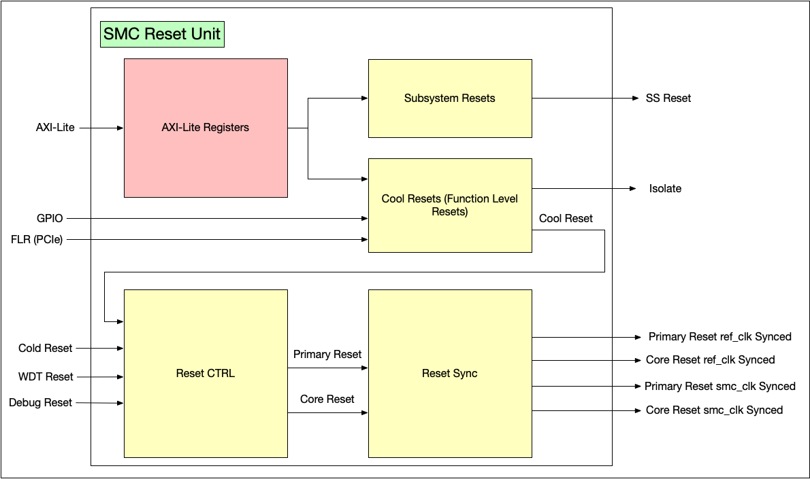

1. System Management Controller (SMC)
1.1. Overview
The System Management Controller (SMC) is a subsystem in a chiplet that takes on the system management tasks, including managing clock/voltage/reset, configuring the hardware platform, bringing up the system, and reporting system status.
Given its essential role, a SiP with multiple chiplets integrates one SMC per chiplet. Each SMC instance in a chiplet is responsible for system management of the local chiplet. On top of that, a management hierarchy is expected to be built among different SMC instances, according to the OCA hierarchical system architecture, , Sec. 3.1 and 3.2. This means an SMC instance in the primary chiplet is expected to play additional roles to manage SiP level tasks for the secondary chiplets.
The SMC consists of a micro-controller and different facilitative components for various purposes. At high level, SMC’s main control logic is implemented in the firmware running on the micro-controller. Hardware facilitative components are added only when certain tasks cannot be implemented by firmware.
The SMC architecture is organized around a RISC-V CPU cluster that executes firmware-based control logic. The CPU operates within the primary SMC clock domain and includes associated cache hierarchies for efficient instruction and data access. The system employs a multi-domain clocking architecture with a high-speed SMC clock domain for computational components, a stable reference clock domain for timing-sensitive operations, and a peripheral clock domain for external interfaces.
The interconnect fabric provides AXI4 and AXI4-Lite bus infrastructure connecting the CPU to various system components. This fabric includes address remapping engines for security and virtualization support, traffic filtering mechanisms for access control, and crossbar switches for efficient data routing.
Memory resources include read-only memory (ROM) for firmware storage and scratchpad memory for runtime data. The memory system is complemented by a DMA controller for efficient bulk data transfers and a memory zeroer for secure data clearing operations.
Peripheral interfaces enable communication and control of external systems. These include GPIO controllers for general-purpose I/O, I2C and UART interfaces for serial communication, AVSBus controller for adaptive voltage scaling, and PVT (Process, Voltage, Temperature) sensors for environmental monitoring. A telemetry receiver collects system performance data, while the system timer OCTS provides multi-chiplet time synchronization.
System management functions include clock and reset controllers for power and reset sequencing, an interrupt controller (PLIC) for handling system events, and core-local interruptors (CLINT) for timer and software interrupt management. Debug infrastructure provides JTAG access and RISC-V debug module support for development and troubleshooting.
The figure below shows the SMC microarchitectural diagram.

The rest of this documentation describes architectural requirements and microarchitectural implementation of SMC’s components in OCAH. A consolidated description of OCAH use cases is available in the top-level Use Cases section.
1.2. Memory Map
This section provides a comprehensive overview of the SMC memory map. The SMC address space is organized to provide access to various functional units including CPU control, peripheral interfaces, system management functions, and fabric control mechanisms.
All addresses below are expressed as BASE + offset, where BASE can
be either the local alias (LOCAL_BASE, fixed read-only at
0xC000_0000) or the global system address (GLOBAL_BASE,
programmable by firmware). The fabric routes transactions to SMC
resources identically regardless of which base is used, as long as the
access falls inside the relevant local or global aperture. The current
SMC REGION_SIZE CSR reset is 16 MiB for the chiplet-global aperture;
the input fabric’s internal local-alias window is controlled by the RTL
LOCAL_ALIAS_REGION_SIZE parameter, currently fixed at 16 MiB.
Addresses are 32-bit aligned and follow standard AXI4-Lite addressing
conventions. For details on how LOCAL_BASE and GLOBAL_BASE relate
and how an adopter maps this aperture into the system address space,
refer to the
SMC Address Map Integration
section of the Integration Guide.
1.2.1. Address Space Organization
The SMC address space is divided into several major functional regions:
| Address Range | Size | Function | Description |
|---|---|---|---|
BASE + 0x000_0000 - BASE + 0x000_0FFF |
4KB |
Watchdog Timers |
Per-core watchdog timer interfaces (4 cores, 1KB each) |
BASE + 0x000_1000 - BASE + 0x000_1FFF |
4KB |
Debug Unit |
RISC-V Debug Module interface |
BASE + 0x000_2000 - BASE + 0x000_2FFF |
4KB |
System Control |
Reset unit and miscellaneous system control registers |
BASE + 0x000_3000 - BASE + 0x000_3FFF |
4KB |
GPIO Interface |
General Purpose I/O control and configuration (65 GPIO instances) |
BASE + 0x000_4000 - BASE + 0x000_5FFF |
8KB |
I3C Controllers |
OCA I3C controller instances (6 instances) |
BASE + 0x000_6000 - BASE + 0x000_8FFF |
12KB |
Peripheral Controllers |
AVSBus, I2C, and UART interfaces |
BASE + 0x000_9000 - BASE + 0x000_DFFF |
20KB |
Security, Timing & DFT |
eFuse, telemetry, system timer, DTP control, and DFT status |
BASE + 0x001_0000 - BASE + 0x001_7FFF |
32KB |
Fabric Control |
CPU control, address remapping, and filtering |
BASE + 0x001_8000 - BASE + 0x003_7FFF |
128KB |
Mailbox |
Inter-processor communication mailbox (32 channels: 16 inbound + 16 outbound) |
BASE + 0x003_8000 - BASE + 0x003_83FF |
1KB |
Data Processing |
DMA controller and memory zeroer |
BASE + 0x004_0000 - BASE + 0x007_FFFF |
256KB |
Memory Regions |
ROM and scratchpad memory spaces |
BASE + 0x016_0000 - BASE + 0x016_8FFF |
36KB |
CLA |
Debug and trace (CLA) module |
BASE + 0x040_0000 - BASE + 0x040_57FF |
22KB |
AXI-Lite External |
Adopter extension window: mandatory technology-specific blocks (GPIO pads, PLL, PVT, eFuse SHIM) plus optional supplementary devices |
BASE + 0x080_0000 - BASE + 0x1FF_FFFF |
24MB |
Address Remapping |
M-mode and Xvisor remapped address regions |
BASE + 0x400_0000 - BASE + 0x43F_FFFF |
4MB |
Interrupt Controller |
RISC-V PLIC (Platform-Level Interrupt Controller) |
BASE + 0x800_0000 - BASE + 0x801_3FFF |
80KB |
Timer & Bus Error |
CLINT and per-core Bus Error Units |
1.2.2. Detailed Address Map
The following table provides specific address assignments for all SMC components:
| Component | Address Range | Instance | Description |
|---|---|---|---|
WDT Core 0-3 |
BASE + 0x000_0000 + (N×0x400) |
4 instances |
Watchdog timers for each CPU core |
Debug Module |
BASE + 0x000_1000 - BASE + 0x000_1FFF |
1 instance |
RISC-V debug interface |
Reset Unit |
BASE + 0x000_2000 - BASE + 0x000_27FF |
1 instance |
System reset control |
Miscellaneous Wrapper |
BASE + 0x000_2800 - BASE + 0x000_2FFF |
1 instance |
System configuration registers |
GPIO Interface |
BASE + 0x000_3000 + (N×0x10) |
65 instances |
GPIO interface control |
GPIO Control |
BASE + 0x000_3440 + (N×0x20) |
65 instances |
GPIO pad configuration |
OCA I3C Controllers |
BASE + 0x000_4000 + (N×0x500) |
6 instances |
OCA I3C controller instances |
AVSBus Controller |
BASE + 0x000_6000 - BASE + 0x000_6FFF |
1 instance |
Adaptive voltage scaling control |
I2C Wrapper |
BASE + 0x000_7000 - BASE + 0x000_7FFF |
1 instance |
I2C/SMBus communication interface |
UART Wrapper |
BASE + 0x000_8000 - BASE + 0x000_8FFF |
1 instance |
UART communication interface |
eFuse Map |
BASE + 0x000_9000 - BASE + 0x000_9FFF |
1 instance |
eFuse memory mapping interface |
eFuse Interface |
BASE + 0x000_A000 - BASE + 0x000_AFFF |
1 instance |
eFuse interface controller |
Telemetry Receiver |
BASE + 0x000_B000 - BASE + 0x000_BFFF |
1 instance |
Telemetry data processing |
System Timer OCTS |
BASE + 0x000_C000 - BASE + 0x000_CFFF |
1 instance |
Multi-chiplet time synchronization |
DTP Control Registers |
BASE + 0x000_D000 - BASE + 0x000_D7FF |
512 entries |
DTP control register block |
DFT Control/Status |
BASE + 0x000_D800 - BASE + 0x000_DFFF |
1 instance |
DFT control and status for ROM |
CPU Control |
BASE + 0x001_0000 - BASE + 0x001_1FFF |
1 instance |
CPU cluster management |
Alias Remap |
BASE + 0x001_2000 + (N×0x20) |
8 instances |
Address alias remapping |
M-mode Remap |
BASE + 0x001_3000 + (N×0x8) |
8 instances |
Machine mode address remapping |
Xvisor Remap |
BASE + 0x001_4000 + (N×0x8) |
8 instances |
Hypervisor address remapping |
Inbound Filters |
BASE + 0x001_5000 + (N×0x20) |
16 instances |
Inbound traffic filtering |
Outbound Filters |
BASE + 0x001_6000 + (N×0x20) |
16 instances |
Outbound traffic filtering |
Mailbox |
BASE + 0x001_8000 - BASE + 0x003_7FFF |
32 channels |
Inter-processor communication (16 inbound + 16 outbound) |
DMA Controller |
BASE + 0x003_8000 - BASE + 0x003_81FF |
1 instance |
Direct memory access controller |
Memory Zeroer |
BASE + 0x003_8200 - BASE + 0x003_83FF |
1 instance |
Memory initialization unit |
SPM ROM Memory |
BASE + 0x004_0000 - BASE + 0x005_FFFF |
128KB |
Scratchpad ROM memory space |
SPM Memory |
BASE + 0x006_0000 - BASE + 0x007_FFFF |
128KB |
Scratchpad memory space |
SMC CLA |
BASE + 0x016_0000 - BASE + 0x016_8FFF |
1 instance |
Debug and trace (CLA) module |
AXI-Lite External |
BASE + 0x040_0000 - BASE + 0x040_57FF |
1 window |
Adopter extension window, split into a mandatory and a supplementary region (see the AXI-Lite External Window section below) |
M-mode Region |
BASE + 0x100_0000 - BASE + 0x17F_FFFF |
8MB |
Machine mode remapped space |
Xvisor Region |
BASE + 0x180_0000 - BASE + 0x1FF_FFFF |
8MB |
Hypervisor remapped space |
PLIC |
BASE + 0x400_0000 - BASE + 0x43F_FFFF |
4MB |
Platform-Level Interrupt Controller |
CLINT |
BASE + 0x800_0000 - BASE + 0x800_FFFF |
64KB |
Core Local Interruptor |
Bus Error Units |
BASE + 0x801_0000 + (N×0x1000) |
4 instances |
Per-core bus error handling |
1.2.3. AXI-Lite External Window
The smc_external window at BASE + 0x040_0000 is the adopter extension
window. OCAH exposes this AXI-Lite bus so an adopter can attach their own
technology- and vendor-specific implementations of memory-mapped blocks. The
window is split into two regions (see smc_external.rdl); hardware treats
both identically — the split is purely organizational:
-
Mandatory (
BASE + 0x040_0000): blocks every integration must implement. Their function is dictated by the OCAH specifications, but their implementation is inherently technology- and vendor-specific — the GPIO pad controls, the PLL macro, the PVT sensors, and the eFuse SHIM. -
Supplementary (
BASE + 0x040_4000): optional region for any additional memory-mapped devices the adopter wants to expose. The reference integration places its vendor I3C controllers (nonfree overlay) here.
Addresses below are expressed as BASE + offset (BASE = 0xC000_0000).
| Component | Address Range | Instance | Description |
|---|---|---|---|
PLL Clock-Obs GPIO |
BASE + 0x040_0000 (intf), BASE + 0x040_000C (ctrl) |
1 instance |
PLL clock observation GPIO |
PVT Clock-Obs GPIO |
BASE + 0x040_0010 (intf), BASE + 0x040_001C (ctrl) |
1 instance |
PVT clock observation GPIO |
GPIO PoC/PBias Control |
BASE + 0x040_0020 |
1 instance |
Power-on and pad bias control |
GPIO Refclk Control |
BASE + 0x040_002C |
1 instance |
Reference clock GPIO control |
Per-Pad GPIO Control |
BASE + 0x040_0100 + (N×0x20) |
65 instances |
Per-pad control registers for the pad ring |
PLL Wrapper |
BASE + 0x040_1000 |
1 instance |
Clock generation and management |
PVT Wrapper |
BASE + 0x040_2000 |
1 instance |
Process, Voltage, Temperature monitoring |
eFuse SHIM |
BASE + 0x040_3000 |
1 instance |
Adopter eFuse hardware abstraction layer |
| Component | Address Range | Instance | Description |
|---|---|---|---|
Vendor I3C Controllers |
BASE + 0x040_4000 + (N×0x400) |
6 instances |
Vendor I3C controller wrappers (nonfree overlay) |
The unallocated remainder of the window is passed through to the chip-level adopter external port.
1.2.4. Register Interface Standards
All SMC components use standard AMBA interfaces. We summarize the interfaces in the following table:
| Interface | Address Width | Data Width | Description |
|---|---|---|---|
AXI4-Lite |
32-bit |
64-bit |
High-performance components |
APB4 |
32-bit |
32-bit |
Peripheral components |
Address Alignment: 32-bit registers on 4-byte boundaries, 64-bit on 8-byte boundaries |
|||
Endianness: Little-endian byte ordering throughout |
|||
Protection: AXI protection bits used for secure/non-secure access control |
|||
1.2.5. Access Control and Security
The SMC implements the following access control mechanisms:
| Mechanism | Description |
|---|---|
Address Filtering |
Configurable inbound and outbound address filters |
Protection Levels |
AXI protection attribute enforcement |
Secure Regions |
eFuse and security-critical registers require elevated privileges |
Error Handling |
Bus error units provide comprehensive error logging and reporting |
1.2.6. Component-Specific Register Documentation
For detailed register-level documentation of each SMC component, refer to the individual component documentation:
| Category | Description | Reference |
|---|---|---|
CPU and System Control |
CPU Control, PLIC, CLINT, Watchdog Timers, and Bus Error Units |
cpu |
Interrupt Controller |
Platform-Level Interrupt Controller (PLIC) details |
interrupts |
DMA Controller |
DMA Controller detailed register interface |
dma |
Memory Zeroer |
Memory Zeroer control registers |
zeroer |
Fabric Control |
Address remapping, inbound/outbound filters, and fabric control registers |
fabric |
Peripherals and I/O |
GPIO, UART, I2C, PVT, eFuse, Telemetry, and System Timer registers |
periphs |
Reset Management |
Reset unit and system control registers |
clk_rst |
Clock Generation |
PLL wrapper and clock generation registers |
pll |
1.3. Clock and Reset Management
The SMC clock and reset management architecture supports multiple clock domains, hierarchical reset structures, and selective power management through clock gating.
1.3.1. Clock Architecture
The SMC employs a multi-domain clocking architecture.
The SMC Clock Domain
The primary SMC clock domain (clk_smc_i) serves as the operational clock for the majority of SMC functionality. This domain encompasses the computationally intensive elements of the system management controller.
Within this clock domain, the RISC-V CPU cluster operates with its associated cache hierarchies.
The local fabric infrastructure, including the AXI crossbar and interconnect components, shares this clock domain to maintain coherent, high-performance data movement between system management components.
Control logic components including address remapping engines and filtering mechanisms also belong to this clock domain.
The Reference Clock Domain
The reference clock domain (clk_ref_i) provides a low-speed, stable timing foundation for operations that require consistent, predictable timing behavior.
System timers, including the Core Local Interruptor (CLINT) and specialized system timer OCTS (On-Chip Time Synchronization), operate within this reference domain.
This clock is used as reference clock for PLL control and frequency synthesis.
The reference clock domain also serves as the synchronization anchor for reset domain crossings, providing the stable timing reference necessary for implementing robust reset synchronization mechanisms.
Debug infrastructure, including JTAG interfaces and debug module operations, benefit from this stable timing reference to ensure reliable debug access independent of system operational state.
The Peripheral Clock Domain
The peripheral clock domain (clk_periph_i) provides a dedicated timing source for all peripheral controllers instantiated within the SMC peripheral wrapper (smc_external_peripheral_wrapper). This clock is supplied by the platform’s clock generation infrastructure. A minimum frequency of 100 MHz applies; the upper limit is not fixed and is set by the integrator according to timing closure, peripheral IP limits, and system power and performance goals.
The following peripherals operate within this clock domain:
-
AVSBus Controller
-
I2C Controller
-
UART 16550
-
I3C Controller
The peripheral register crossbar also operates in this clock domain. A CDC bridge at the crossbar’s upstream slave port synchronizes register accesses arriving from the CPU fabric.
The register path to the GPIO controller and the pad interface includes a dedicated AXI-Lite CDC from the peripheral clock domain into the reference clock domain. The pad multiplexing logic and the physical pad I/O interface operate in the always-on reference clock domain.
Decoupling peripheral timing from the high-frequency CPU and fabric clock enables independent frequency scaling of the peripheral subsystem, reducing dynamic power consumption while still meeting the timing requirements of external interfaces.
The Telemetry Clock Domain
The telemetry clock domain (clk_telemetry_i) provides timing for the telemetry receiver module. This clock is sourced from the telemetry data interface itself and does not require a dedicated PLL within the SMC. The integrator supplies this clock along with the incoming telemetry data stream, ensuring proper synchronization between the clock and data.
The telemetry receiver uses this clock for capturing and processing incoming ATB (Advanced Trace Bus) telemetry data from multi-chiplet systems.
1.3.2. Reset Architecture
The SMC employs a hierarchical reset strategy with multiple reset sources and synchronization mechanisms. The following diagram shows the reset architecture.

The following table lists the reset sources and their characteristics.
BP_POWERGOOD is the board power-good indicator used as the power-on reset
(POR) root: it is stretched into powergood_stable, which qualifies the SMC
functional cold reset path, and it is also passed into the JTAG/DTP stack as
pwr_on_rst_ni. In jtag_ptap, pwr_on_rst_ni is ANDed with the pad TRST
signal to form the effective TAP reset, so loss of power-good forces TAP/TDR
logic into reset even when TRST is released. BP_RESETN drives the SMC
functional cold reset path after power-good is stable.
| Reset Source | Scope | Activation Method | Primary Use Case |
|---|---|---|---|
Power-On Reset |
Full reset |
BP_POWERGOOD |
Full initialization, including JTAG/TDR reset state |
Functional Cold Reset |
Primary functional reset |
BP_RESETN |
POR-class functional reset excluding JTAG/TDR reset state |
Cool Reset |
Primary Reset with isolation |
External controller/BMC |
Selective system reset |
Watchdog Reset |
Core Reset |
Timer expiration |
Automated fault recovery |
Debug Reset |
Core Reset |
Debug interface |
Development and debugging |
Function Level Reset |
Configurable subsystem |
PCIe interface |
Hot-plug and system integration |
The two primary reset levels are Primary Reset and Core Reset:
Primary Reset (rst_primary_no)
The top-level functional reset for the SMC subsystem, including CPU
cores and cache hierarchies, fabric infrastructure, peripheral
controllers and interfaces, and SMC control and configuration
registers. JTAG/TDR reset state is reset by POR, not by
rst_primary_no alone.
Primary reset is activated by reset sources in the following table:
| Reset Source | Activation Method |
|---|---|
Power-On Reset |
Holds SMC functional reset gated until power-good is
stable; resets JTAG/TDR state via TAP reset ( |
Cool Reset |
System-level reset allowing selective isolation |
Functional Cold Reset |
Resets SMC functional logic through
|
Warm Reset (rst_warm_no)
A more targeted reset affecting CPU cores and associated peripherals. Specifically, CPU cores and their private cache hierarchies, PLIC (Platform-Level Interrupt Controller), CLINT (Core Local Interruptor), per-core watchdog timers and bus error units
Warm reset is activated by reset sources in the following table:
| Reset Source | Activation Method |
|---|---|
Primary Reset |
Cascaded from higher-level reset |
Watchdog Timeout |
Internal or external watchdog expiration |
Debug Reset |
Debug interface initiated reset |
Function Level Reset (FLR)
Function Level Reset (FLR) addresses the requirements of systems where PCIe-based reset operations must be able to selectively reset system management functionality without affecting the entire SoC. The FLR mechanism responds to PCIe FLR requests (cfg_flr_pf_active) and orchestrates a controlled reset sequence that allows selective subsystem isolation.
Isolation Control Architecture
The FLR implementation provides isolation control for up to 32 individual subsystems, each with configurable isolation capabilities. The isolation request output (isolate_req_o[31:0]) aggregates three independent control sources:
-
Software Control: Direct firmware control via the ISOLATE_REQ_REG register, enabling programmatic isolation for operational scenarios
-
Pin-Based Control: External pin-driven isolation via isolate_req_pin_i and ISOLATE_REQ_PINEN_REG, supporting board-level control requirements
-
FLR-Triggered Control: Automatic isolation assertion upon PCIe FLR detection, configured through ISOLATE_REQ_SMCEN_REG to specify which subsystems participate in FLR sequences
The final isolation state for each subsystem is the logical OR of all three sources, providing flexible control while maintaining clear precedence for safety-critical operations.
Programmable Reset Timing
The FLR implementation provides two programmable timing phases that control the reset sequence with cycle-accurate precision:
-
Pre-Reset Delay (ISOLATE_REQ_FLR_COUNTER_VALUE): Configurable delay from FLR trigger to cool reset assertion, allowing sufficient time for subsystem isolation to complete before reset propagation
-
Reset Assertion Duration (ISOLATE_REQ_FLR_RESET_COUNTER_VALUE): Defines the cool reset hold time, ensuring adequate reset propagation through isolated subsystems
The timing control operates in the reference clock domain to ensure consistent, predictable behavior independent of the SMC operational clock frequency. The implementation employs a two-stage state machine with down-counters that coordinate isolation establishment and reset assertion.
Memory Test Bypass
Memory repair and Built-In Self-Test (MBIST) operations can be selectively bypassed during FLR operations (skip_mem_repair_o), enabling rapid reset sequences when comprehensive memory testing is not required. This bypass activates automatically when either FLR-triggered or pin-based isolation is asserted.
Clock Domain Crossing and Synchronization
The FLR trigger signal crosses from the PCIe clock domain into both the SMC and reference clock domains through multi-stage synchronizers. Rising edge detection on the synchronized FLR active signal initiates the isolation and reset sequence. This architecture ensures reliable FLR operation regardless of clock frequency relationships between the PCIe interface and SMC subsystems.
Reset Synchronization and Timing Integrity
The SMC reset architecture implements synchronization mechanisms that ensure reset operations maintain timing integrity across multiple clock domains.
The reset synchronization implementation employs proven prim_rst_sync as synchronization primitives with the target clock domain. Reset assertion is asynchronous and deassertion is synchronous.
The synchronization primitives include multiple flip-flop stages that provide metastability protection.
| Synchronized Reset Signal | Target Clock Domain | Functional Purpose |
|---|---|---|
rst_primary_smc_clk_no |
SMC Clock Domain |
Primary reset coordination for computational elements |
rst_warm_smc_clk_no |
SMC Clock Domain |
Core-specific reset coordination within SMC domain |
rst_primary_ref_clk_no |
Reference Clock Domain |
Primary reset coordination for timing-critical functions |
rst_primary_periph_clk_no |
Peripheral Clock Domain |
Primary reset coordination for peripheral controllers |
Advanced Subsystem Reset Capabilities
Beyond basic reset control, SMC supports several features for demanding system management needs:
| Feature | Description |
|---|---|
Reference Clock Forcing |
Forces use of a stable clock during resets for timing reliability. |
Configuration Hold |
Retains selected configuration during resets for fast recovery. |
SRAM Preservation |
Keeps memory contents intact across certain reset events. |
Debug State Preservation |
Maintains debug and signal states through resets for advanced troubleshooting. |
These features enable flexible reset management, data retention, and robust operation during complex reset scenarios.
Register Interface
Register interface for subsystem reset control:
Address Map: reset_unit
Register List:
| Address | Name | Access | Description |
|---|---|---|---|
| 0x20 | SS_CONFIG | RW | - |
| 0x24 | SS_CONFIG_LOCK | RW | - |
| 0x40 | SS_COLD_RESET_N | RW | - |
| 0x44 | SS_WARM_RESET_N | RW | - |
| 0x48 | SS_CONFIG_HOLD | RW | - |
| 0x4C | SS_SRAM_HOLD | RW | - |
| 0x50 | SS_CRITICAL_HOLD | RW | - |
| 0x54 | SS_DEBUG_HOLD | RW | - |
| 0x60 | SS_RESET_COMPLETE | R | - |
| 0x70 | SS_COLD_RESET_LOCK | RW | - |
| 0x80 | SS_FORCE_TO_REF_CLK | RW | - |
| 0x90 | STRAPS_LO | R | - |
| 0x94 | STRAPS_HI | R | - |
| 0xA8 | SYNC_REG | RW | - |
| 0xB0 | ISOLATE_REQ_REG | RW | - |
| 0xB4 | ISOLATE_REQ_PINEN_REG | RW | - |
| 0xB8 | ISOLATE_REQ_SMC_REG | RW | - |
| 0xBC | ISOLATE_REQ_SMCEN_REG | RW | - |
| 0xC0 | ISOLATE_REQ_VIS | R | - |
| 0xC4 | ISOLATE_REQ_FLR_COUNTER_VALUE | RW | - |
| 0xC8 | ISOLATE_REQ_FLR_RESET_COUNTER_VALUE | RW | - |
Register Details:
SS_CONFIG
| Bits | Field | Access | Reset | Description |
|---|---|---|---|---|
| 31:0 | ss_config | RW | 0x0 | Configuration registers to setup system configuration. Usage is integration-specific; see the adopter chiplet specification. |
SS_CONFIG_LOCK
| Bits | Field | Access | Reset | Description |
|---|---|---|---|---|
| 31:0 | config_lock | RW | 0x0 | Written to lock down SS config. If bit 0 is written, then bit 0 of other SS config cannot be written to again |
SS_COLD_RESET_N
| Bits | Field | Access | Reset | Description |
|---|---|---|---|---|
| 31:0 | reset_n_n0_scan | RW | 0x0 | Subsystem active low cold resets |
SS_WARM_RESET_N
| Bits | Field | Access | Reset | Description |
|---|---|---|---|---|
| 31:0 | reset_n_n0_scan | RW | 0xFFFFFFFF | Subsystem active low warm resets |
SS_CONFIG_HOLD
| Bits | Field | Access | Reset | Description |
|---|---|---|---|---|
| 31:0 | configuration_state_hold | RW | 0x0 | Used with warm_reset_n. Asserting ensures all registers configured during boot, including fuse values for export compliance, SRAM repair, other fuse values, etc. are preserved |
SS_SRAM_HOLD
| Bits | Field | Access | Reset | Description |
|---|---|---|---|---|
| 31:0 | sram_hold | RW | 0x0 | Used with warm_reset_n. Asserting ensures SRAMs, latch arrays and anything else that MBIST is used to test and initialize during cold reset are preserved |
SS_CRITICAL_HOLD
| Bits | Field | Access | Reset | Description |
|---|---|---|---|---|
| 31:0 | critical_signal_hold | RW | 0x0 | Used with warm_reset_n. Asserting ensures security, RAS, NMIs, perf counters, debug/trace and other subsystem specific registers are preserved |
SS_DEBUG_HOLD
| Bits | Field | Access | Reset | Description |
|---|---|---|---|---|
| 31:0 | debug_hold | RW | 0x0 | Used with warm_reset_n. Debug hold signal to ensure any debug registers are preserved |
SS_RESET_COMPLETE
| Bits | Field | Access | Reset | Description |
|---|---|---|---|---|
| 31:0 | reset_complete | R | 0x0 | Response signal from subsystem to indicate reset (or some other critical step) has completed. Bitwise write 1 to clear |
SS_COLD_RESET_LOCK
| Bits | Field | Access | Reset | Description |
|---|---|---|---|---|
| 31:0 | cold_reset_lock | RW | 0x0 | Written to lock down SS cold reset. If bit 0 is written, then bit 0 of other SS cold reset cannot be written to again |
SS_FORCE_TO_REF_CLK
| Bits | Field | Access | Reset | Description |
|---|---|---|---|---|
| 31:0 | force_ss_to_ref_clk_n | RW | 0x0 | Forces clock to be ref clk. The ensures reset reaches all FFs within a subsystem in same clock cycle |
STRAPS_LO
| Bits | Field | Access | Reset | Description |
|---|---|---|---|---|
| 31:0 | straps | R | 0x0 | Strap value from GPIOs 0 - 31 |
STRAPS_HI
| Bits | Field | Access | Reset | Description |
|---|---|---|---|---|
| 31:0 | straps | R | 0x0 | Strap value from GPIOs 32 - 63 |
SYNC_REG
| Bits | Field | Access | Reset | Description |
|---|---|---|---|---|
| 31:1 | Reserved | - | - | Reserved |
| 0 | sync | RW | 0x0 | Set to assert global sync bit |
ISOLATE_REQ_REG
| Bits | Field | Access | Reset | Description |
|---|---|---|---|---|
| 31:0 | isolate_req_reg | RW | 0x0 | Isolate request. This prevents reset from being propagated to SS, keeping them alive in case of a cold reset |
ISOLATE_REQ_PINEN_REG
| Bits | Field | Access | Reset | Description |
|---|---|---|---|---|
| 31:0 | isolate_req_pinen_reg | RW | 0x0 | Isolate request pin enable. This enables the external isolate request pin to have an effect on ss isolate requests |
ISOLATE_REQ_SMC_REG
| Bits | Field | Access | Reset | Description |
|---|---|---|---|---|
| 31:1 | Reserved | - | - | Reserved |
| 0 | isolate_req_smc_reg | RW | 0x0 | Isolate request smc. Asserted once cfg_flr_pf_active is asserted, de-asserted by sw |
ISOLATE_REQ_SMCEN_REG
| Bits | Field | Access | Reset | Description |
|---|---|---|---|---|
| 31:0 | isolate_req_smcen_reg | RW | 0x0 | Isolate request smc enable. This enables the FLR lock to have an effect on ss isolate requests |
ISOLATE_REQ_VIS
| Bits | Field | Access | Reset | Description |
|---|---|---|---|---|
| 31:9 | Reserved | - | - | Reserved |
| 8 | cool_reset_n_o | R | 0x1 | Visibility bit for cool reset output |
| 7:5 | Reserved | - | - | Reserved |
| 4 | cool_reset_n_i | R | 0x1 | Visibility bit for cool reset input |
| 3:1 | Reserved | - | - | Reserved |
| 0 | isolate_req_pin | R | 0x1 | Visibility bit for isolate request pin |
ISOLATE_REQ_FLR_COUNTER_VALUE
| Bits | Field | Access | Reset | Description |
|---|---|---|---|---|
| 31:0 | isolate_req_flr_counter_value | RW | 0x0 | Number of cycles post cfg_flr_pf_active assertion is waited until cool_reset_n is asserted |
ISOLATE_REQ_FLR_RESET_COUNTER_VALUE
| Bits | Field | Access | Reset | Description |
|---|---|---|---|---|
| 31:0 | isolate_req_flr_reset_counter_value | RW | 0x0 | Number of cycles cool_reset_n is asserted for. NOTE: The cool reset flow requires this value to be greater than 0; a value of 0 will prevent initiation, regardless of ISOLATE_REQ_FLR_COUNTER_VALUE's value |
1.3.3. Clock and Reset-Based Power Management Integration
The following table lists the clock gating control parameters.
| Parameter | Configuration Range | Operational Impact |
|---|---|---|
Hysteresis Control |
6-bit programmable |
Prevents clock gating oscillation under varying load |
Activity Detection |
Per-module basis |
Enables fine-grained power management per component |
Enable Threshold |
Configurable delay |
Balances responsiveness vs. power savings |
Module Gating |
Individual enable/disable |
Allows selective power optimization per functional block |
The reset architecture supports power management beyond clock gating by allowing individual subsystems to be reset and isolated, enabling power islands where unused subsystems can be fully powered down.
1.4. CPU & Memory System
This section describes the SMC’s CPU subsystem, which is based on the Rocket RV64GC RISC-V processor core (see: Rocket Chip). The cluster is generated using the Chipyard Rocket-chip generator and supports 1 to 4 processor cores, each with private L1 cache and access to a shared local SRAM.
Key features include:
-
Up to 4 Rocket CPU cores (RV64GC ISA, 56-bit physical addressing)
-
Core-local L1 instruction and data caches, each configurable in size and associativity
-
Shared local SRAM/Scratchpad and Boot ROM
-
Multi-core system management, deterministic performance for embedded management workloads
-
Full support for RISC-V privilege levels (Machine, Supervisor, User)
1.4.1. Processor Core Overview
The table below summarizes the key features of the Rocket CPU core, and its cache hierarchy
| Attribute | Description |
|---|---|
Cores |
1–4, Rocket RV64GC |
ISA |
RV64GC (I, M, A, F, D, C extensions) |
Microarchitecture |
In-order, 5-stage pipeline |
Privilege Levels |
M/S/U |
Phys. Address |
56 bits |
Reset Vector |
Per-core, independently configurable (56b) |
1.4.2. Cache and Memory Hierarchy
| Component | Default Size | Notes | Configurability |
|---|---|---|---|
L1 I-Cache per core |
4 KiB (32 sets × 2 ways) |
Write-through, Parity |
icache_tag/data_cfg |
L1 D-Cache per core |
4 KiB (32 sets × 2 ways) |
Write-back, SECDED ECC |
dcache_tag/data_cfg |
Local SRAM/Scratchpad |
1 MiB (32 banks) |
Deterministic access, SECDED ECC, bank power gating |
scratch_ram_cfg |
Boot ROM |
128 KiB |
Read-only, stores boot firmware |
rom_cfg |
All memory components (SRAM, caches, ROM) are configurable via top-level parameters. The scratchpad SRAM allows deterministic accesses, independent of cache state, and supports per-bank sizing and power management.
Internally, the CPU cluster uses a TileLink bus to connect cores to the scratchpad, Boot ROM, PLIC, CLINT, and Bus Error Units. At the cluster boundary, TileLink is protocol-bridged to AXI4 and AXI4-Lite for integration with the SMC fabric (see Fabric).
1.4.3. Reset, Boot, and Initialization
Each CPU core supports an independent reset mechanism and a programmable reset vector, configured via rst_core_N_ni and reset_vector_N_i signals for cores N=0 to 3. The design provides separate reset controls for the uncore logic and debug subsystems, enabling flexible platform management and debug flows.
SRAM initialization is handled automatically by hardware on reset, ensuring memory consistency and error-free operation at startup; this feature can be disabled using disable_sram_auto_init_i to support specialized or custom boot procedures. The completion of SRAM initialization is reported through the init_mem_done_o status signal, allowing software to reliably detect when memory is ready for use.
1.4.4. Memory Repair
The SMC CPU subsystem includes Built-In Redundancy Analysis (BIRA) memory repair support to address manufacturing defects in SRAM arrays. Repair uses redundant memory elements configured with data stored in eFuse memory, applied during the boot sequence.
Memory repair executes automatically after eFuse sensing completes and before
MBIST operations. The process reads repair data from the eFuse BIRA register
(16-kilobit repair_data field) and configures redundant memory elements,
ensuring SRAM arrays are functional before the CPU cluster begins execution.
Control Mechanisms:
-
fuse_sense_done_o: eFuse controller output indicating sensing completion. External DFT logic monitors this signal to trigger repair operations. -
skip_mem_repair_o: Reset unit output that bypasses repair when asserted, activating during FLR operations or when theBYPASS_SRAM_REPAIRstrap is set. -
BYPASS_SRAM_REPAIRstrap (GPIO pin 13): Hardware-level bypass control that bypasses repair logic when asserted, assuming SRAM arrays are defect-free.
Status Reporting:
Repair completion and success are reported through DFT Control Status registers
(DFX_CTRL_STATUS_SOC at 0xC000D800 and DFX_CTRL_STATUS_SEP_SMC at
0xC000D80C). The mem_repair_done bit indicates completion, while
mem_repair_success indicates successful repair. The SMC ROM firmware monitors
these bits during initialization to verify repair completion before proceeding
with boot operations.
Boot Sequence Integration:
Memory repair integrates into the boot sequence as follows: after power-on reset
deasserts and eFuse sensing begins, fuse_sense_done_o assertion triggers
repair operations. Repair data is read from eFuse shadow registers and applied
to SRAM, with completion reported through DFT Control Status registers. MBIST
operations begin after repair completes (or is bypassed), and the CPU cluster
reset releases after both repair and MBIST complete. The repair process must
complete successfully before the CPU cluster can safely access SRAM arrays.
During FLR operations, repair is automatically bypassed via skip_mem_repair_o
to enable rapid reset sequences. Normal cold reset sequences always execute
repair unless explicitly bypassed via strap configuration.
1.4.5. System Interfaces
| Interface | Protocol | Description |
|---|---|---|
MMIO |
AXI4-Lite |
56b addressing, low-latency |
L2 Frontend |
AXI4 |
For shared memory/coherency |
Debug |
APB, JTAG |
Non-intrusive, per-core |
1.4.6. Cluster Boundary Isolation
The cluster is reset independently of the surrounding SMC fabric.
If the cluster were reset while a transaction on one of its AXI ports
was still in flight, the fabric on the other side would be left
waiting on a response that never returns, hanging the bus, and could
sample boundary signals while they glitch through reset. To avoid this, each
AXI port is wrapped in an axi_isolate block that drains the outstanding
transactions and holds the boundary at safe values before the reset is allowed
to take effect.
Two instances wrap the AXI ports listed above, each sized for up to four outstanding transactions:
-
the L2 frontend slave port, which blocks new transactions rather than terminating them, and
-
the MMIO master port, which terminates outstanding transactions with an error response to keep reset-time X values from propagating into the fabric.
The non-AXI status crossings (wb_pc_valid, wb_reg_pc, and the per-core
wdt_reset) are clamped to constants over the same window so they cannot leak
glitches either. The boundary also self-isolates on cold boot, releasing only
once SRAM initialization completes and the cores and uncore are out of reset.
Drain Handshake
Isolation is coordinated with the control logic
(smc_cpu_ctrl_wrap) through two signals:
-
isolate_req_i— asserted by the control logic whenever a software reset of the cluster is pending. The control logic withholds the reset itself until the cluster reports that it is safe to apply. -
drained_o— asserted once bothaxi_isolateinstances have drained and isolated their ports, telling the control logic the withheld reset may now be released.
Reset-Domain Crossing
The flops driving the isolate-control logic are held by the cluster’s
uncore/core reset, while the flops inside axi_isolate are held by the Primary
Reset (see Clock and Reset Management). The
uncore/core reset is driven from two sources:
-
a Warm Reset from a watchdog timeout, which is asynchronous to the isolate logic, and
-
a CPU CSR write (the reset-control register in
smc_cpu_ctrl_wrap), which is synchronous.
Because the two sets of flops sit in different reset domains, the asynchronous
warm-reset path is a reset-domain crossing into axi_isolate. This is
acceptable: only the watchdog asserts the warm reset asynchronously, and a
watchdog timeout is followed by a cold reset, so the
brief crossing window has no functional consequence. The CSR path is
synchronous and crosses no domains.
1.4.7. Interrupt and Control Integration
All interrupt wiring—MMIO bases for PLIC, CLINT, watchdog, and bus-error
units; the authoritative cpu_interrupts_o map; PLIC/CLINT register
documentation; and BEU NMI delivery—is documented in Interrupts.
1.4.8. Watchdog Timer System
Each CPU core includes a dedicated watchdog timer (at 0xC000_0000 + N * 0x400), enabling per-core fault detection and recovery without impacting other cores. Base addresses and interrupt-related context for the WDT are summarized in Interrupts.
Timeouts are configurable to suit different workloads, and staged warnings (followed by reset) allow software intervention before hardware reset is triggered.
Watchdog monitoring can be disabled during debugging to prevent false triggers, supporting uninterrupted development and troubleshooting.
1.4.9. Advanced Bus Infrastructure Monitoring and Error Management
Per-core bus error monitors (at 0xC801_0000 + N * 0x1000) track AXI transactions, allowing the system to quickly detect and respond to infrastructure faults that could impact system management.
AXI error capture detects and logs decode, slave, and timeout errors so management software has clear insight into infrastructure health and can tailor its response.
Classifying errors lets software address each type effectively: decode errors may need reconfiguration; timeout errors may require isolating faults and recovery procedures.
Error address and transaction capture aid debugging, preserving context like addresses and data to support thorough fault analysis and recovery coordination.
1.4.10. Debug
Debugging is facilitated by a dedicated APB interface and JTAG, enabling per-core access to registers, memory, and both hardware and software breakpoints. These debug capabilities function independently of functional resets and allow override of reset vectors to support firmware development and diagnostics.
1.4.11. Detailed Register Map
Address Map: debug_module
Register Arrays:
- abstractdata[12]: 12 registers, base 0x10, stride 0x4
- confstrptr[3]: 3 registers, base 0x64, stride 0x4
- progbuf[16]: 16 registers, base 0x80, stride 0x4
Register List:
| Address | Name | Access | Description |
|---|---|---|---|
| 0x10 - 0x3C | abstractdata[12] | RW | Abstract Data Register. Used for arguments/return values of abstract commands. |
| 0x40 | dmcontrol | RW | Controls the overall Debug Module and selected harts. Writes to action bits (haltreq, resumereq, etc.) apply to the new value of hartsel and hasel. |
| 0x44 | dmstatus | R | Reports status for the Debug Module and currently selected harts. This entire register is read-only. |
| 0x48 | hartinfo | R | Information about the hart currently selected by hartsel. Optional; reads all-zero if not present. Entire register is read-only. |
| 0x4C | haltsum1 | R | Read-only. Each bit indicates if any hart in a group of 32 is halted. May not be present in systems with fewer than 33 harts. Unavailable/nonexistent harts are not considered halted. |
| 0x50 | hawindowsel | RW | Selects which 32-bit portion of the hart array mask register is accessible in hawindow. |
| 0x54 | hawindow | RW | R/W access to a 32-bit portion of the hart array mask register, selected by hawindowsel. |
| 0x58 | abstractcs | RW | Controls and status for abstract commands. Writing this register while an abstract command is executing (busy=1) sets cmderr to 1 (busy) if cmderr was 0. |
| 0x5C | command | RW | Writes cause corresponding abstract command to execute. Writing while busy sets cmderr=1 (if cmderr=0). Ignored if cmderr is non-zero. |
| 0x60 | abstractauto | RW | Optional. Allows more efficient burst accesses. Writing while busy sets cmderr=1 (if cmderr=0). Detect support by R/W test. |
| 0x64 - 0x6C | confstrptr[3] | R | Part of configuration string pointer address (if dmstatus.confstrptrvalid=1) or unspecified identifier information. Read-only. |
| 0x74 | nextdm | R | If multiple DMs on DMI, this holds base address of the next DM. 0 if this is the last. Read-only. |
| 0x80 - 0xBC | progbuf[16] | RW | Program Buffer word. For debugger to write small programs. |
| 0xC0 | authdata | RW | 32-bit serial port to/from authentication module. Use when dmstatus.authbusy is clear. |
| 0xD0 | haltsum2 | R | Read-only. Each bit indicates if any hart in a group of 1024 is halted. May not be present if < 1025 harts. |
| 0xD4 | haltsum3 | R | Read-only. Each bit indicates if any hart in a group of 32768 is halted. May not be present if < 32769 harts. |
| 0xDC | sbaddress3 | RW | Bits 127:96 of the physical system bus address for System Bus Access. Not present if sbcs.sbasize < 97. Writes while sbcs.sbbusy=1 set sbcs.sbbusyerror. |
| 0xE0 | sbcs | RW | Controls and status for the System Bus Access master. Writes while sbbusy=1 result in undefined behavior. |
| 0xE4 | sbaddress0 | RW | Bits 31:0 of the physical system bus address. Not present if sbcs.sbasize=0. Writes while sbcs.sbbusy=1 set sbcs.sbbusyerror. If sbcs.sberror=0, sbcs.sbbusyerror=0, and sbcs.sbreadonaddr=1, write triggers read sequence. |
| 0xE8 | sbaddress1 | RW | Bits 63:32 of the physical system bus address. Not present if sbcs.sbasize < 33. Writes while sbcs.sbbusy=1 set sbcs.sbbusyerror. |
| 0xEC | sbaddress2 | RW | Bits 95:64 of the physical system bus address. Not present if sbcs.sbasize < 65. Writes while sbcs.sbbusy=1 set sbcs.sbbusyerror. |
| 0xF0 | sbdata0 | RW | Bits 31:0 of system bus data. Not present if all sbcs.sbaccess* flags are 0. Accesses do nothing if sbcs.sberror or sbcs.sbbusyerror are non-zero. Accesses while sbcs.sbbusy=1 set sbcs.sbbusyerror. Write triggers bus write sequence. Read triggers read sequence including conditional next read if sbcs.sbreadondata=1. |
| 0xF4 | sbdata1 | RW | Bits 63:32 of system bus data. Not present if sbcs.sbaccess64 and sbcs.sbaccess128 are 0. Accesses while sbcs.sbbusy=1 set sbcs.sbbusyerror. |
| 0xF8 | sbdata2 | RW | Bits 95:64 of system bus data. Only exists if sbcs.sbaccess128=1. Accesses while sbcs.sbbusy=1 set sbcs.sbbusyerror. |
| 0xFC | sbdata3 | RW | Bits 127:96 of system bus data. Only exists if sbcs.sbaccess128=1. Accesses while sbcs.sbbusy=1 set sbcs.sbbusyerror. |
| 0x100 | haltsum0 | R | Read-only. Each bit indicates whether one specific hart is halted. Unavailable/nonexistent harts are not considered halted. LSB for hart {hartsel[19:5],5'h0}, MSB for hart {hartsel[19:5],5'h1f}. |
Register Details:
abstractdata[12]
| Bits | Field | Access | Reset | Description |
|---|---|---|---|---|
| 31:0 | data | RW | 0x0 | Data value for abstract commands. |
dmcontrol
| Bits | Field | Access | Reset | Description |
|---|---|---|---|---|
| 31 | haltreq | RW | 0x0 | Halt request for currently selected harts. Write 0 to clear, 1 to set. |
| 30 | resumereq | RW | 0x0 | Resume request for currently selected harts. Writing 1 causes halted harts to resume and clears their resume ack bit. Ignored if haltreq is set. |
| 29 | hartreset | RW | 0x0 | Optional. Hart reset for currently selected harts. Write 1, then 0 to deassert. Debugger must not change selection while this is 1. If not implemented, reads as 0. |
| 28 | ackhavereset | RW | 0x0 | Writing 1 clears havereset for any selected harts. |
| 27 | _reserved_27 | R | 0x0 | Reserved. |
| 26 | hasel | RW | 0x0 | Selects definition of currently selected harts. 0: single hart by hartsel. 1: hart by hartsel plus those by hart array mask. Tied to 0 if hart array mask not implemented. |
| 25:16 | hartsello | RW | 0x0 | Low 10 bits of hartsel: DM-specific index of the hart to select. |
| 15:6 | hartselhi | RW | 0x0 | High 10 bits of hartsel: DM-specific index of the hart to select. |
| 5:4 | _reserved_5_4 | R | 0x0 | Reserved. |
| 3 | setresethaltreq | RW | 0x0 | Optional (if dmstatus.hasresethaltreq=1). Writing 1 sets halt-on-reset request bit for selected harts (unless clrresethaltreq is also 1). |
| 2 | clrresethaltreq | RW | 0x0 | Optional (if dmstatus.hasresethaltreq=1). Writing 1 clears halt-on-reset request bit for selected harts. |
| 1 | ndmreset | RW | 0x0 | Controls reset signal from DM to system (ndmreset). Write 1, then 0 to deassert. |
| 0 | dmactive | RW | 0x0 | Debug Module active and reset. 0: DM takes reset values (except this bit). 1: DM functions normally. |
dmstatus
| Bits | Field | Access | Reset | Description |
|---|---|---|---|---|
| 31:23 | _reserved_31_23 | R | 0x0 | Reserved. |
| 22 | impebreak | R | 0x0 | 1: Implicit ebreak after Program Buffer. Must be 1 if abstractcs.progbufsize is 1. |
| 21:20 | _reserved_21_20 | R | 0x0 | Reserved. |
| 19 | allhavereset | R | 0x0 | 1: All currently selected harts have been reset and not acknowledged. |
| 18 | anyhavereset | R | 0x0 | 1: At least one currently selected hart has been reset and not acknowledged. |
| 17 | allresumeack | R | 0x0 | 1: All currently selected harts have acknowledged their last resume request. |
| 16 | anyresumeack | R | 0x0 | 1: Any currently selected hart has acknowledged its last resume request. |
| 15 | allnonexistent | R | 0x0 | 1: All currently selected harts do not exist in this platform. |
| 14 | anynonexistent | R | 0x0 | 1: Any currently selected hart does not exist in this platform. |
| 13 | allunavail | R | 0x0 | 1: All currently selected harts are unavailable. |
| 12 | anyunavail | R | 0x0 | 1: Any currently selected hart is unavailable. |
| 11 | allrunning | R | 0x0 | 1: All currently selected harts are running. |
| 10 | anyrunning | R | 0x0 | 1: Any currently selected hart is running. |
| 9 | allhalted | R | 0x0 | 1: All currently selected harts are halted. |
| 8 | anyhalted | R | 0x0 | 1: Any currently selected hart is halted. |
| 7 | authenticated | R | 0x0 | 0: Authentication required. 1: Authentication passed. Preset to 1 if no authentication implemented. |
| 6 | authbusy | R | 0x0 | 0: Authentication module ready. 1: Authentication module busy. |
| 5 | hasresethaltreq | R | 0x0 | 1: DM supports halt-on-reset functionality (setresethaltreq/clrresethaltreq bits in dmcontrol). |
| 4 | confstrptrvalid | R | 0x0 | 0: confstrptr0-3 are not relevant to config string. 1: confstrptr0-3 hold config string address. |
| 3:0 | version | R | 0x2 | Debug Module version. 0=No DM, 1=v0.11, 2=v0.13, 15=Non-conformant. |
hartinfo
| Bits | Field | Access | Reset | Description |
|---|---|---|---|---|
| 31:24 | _reserved_31_24 | R | 0x0 | Reserved. |
| 23:20 | nscratch | R | 0x0 | Number of dscratch registers available for debugger use during program buffer execution (dscratch0 upwards). |
| 19:17 | _reserved_19_17 | R | 0x0 | Reserved. |
| 16 | dataaccess | R | 0x0 | 0: Data registers (dataN) are shadowed by CSRs. 1: Data registers are shadowed in hart's memory map. |
| 15:12 | datasize | R | 0x0 | If dataaccess=0: Number of CSRs for dataN. If dataaccess=1: Number of 32-bit words in memory map for dataN. Max value 12. |
| 11:0 | dataaddr | R | 0x0 | If dataaccess=0: Number of first CSR for dataN. If dataaccess=1: Signed address of RAM where dataN are shadowed (relative to zero). |
haltsum1
| Bits | Field | Access | Reset | Description |
|---|---|---|---|---|
| 31:0 | haltsum1 | R | 0x0 | Halt status summary. LSB for harts {hartsel[19:10],10'h0}-{hartsel[19:10],10'h1f}, MSB for harts {hartsel[19:10],10'h3e0}-{hartsel[19:10],10'h3ff}. |
hawindowsel
| Bits | Field | Access | Reset | Description |
|---|---|---|---|---|
| 31:15 | _reserved_31_15 | R | 0x0 | Reserved. High bits may be tied to 0 depending on hart array mask size. |
| 14:0 | hawindowsel | RW | 0x0 | Window select for hart array mask register. E.g., on a system with 48 harts, only bit 0 may be writable. |
hawindow
| Bits | Field | Access | Reset | Description |
|---|---|---|---|---|
| 31:0 | maskdata | RW | 0x0 | 32-bit window into the hart array mask register. Some bits may be constant 0, depending on hawindowsel and implemented harts. |
abstractcs
| Bits | Field | Access | Reset | Description |
|---|---|---|---|---|
| 31:29 | _reserved_31_29 | R | 0x0 | Reserved. |
| 28:24 | progbufsize | R | 0x0 | Size of the Program Buffer, in 32-bit words. Valid sizes are 0-16. |
| 23:13 | _reserved_23_13 | R | 0x0 | Reserved. |
| 12 | busy | R | 0x0 | 1: An abstract command is currently being executed. Set when 'command' is written, cleared on completion. |
| 11 | _reserved_11 | R | 0x0 | Reserved. |
| 10:8 | cmderr | RW | 0x0 | Abstract command error status. Remains set until cleared. Valid if busy=0. 0=none, 1=busy, 2=not_supported, 3=exception, 4=halt/resume, 5=bus, 7=other. |
| 7:4 | _reserved_7_4 | R | 0x0 | Reserved. |
| 3:0 | datacount | R | 0x0 | Number of data registers (dataN) implemented. Valid sizes are 1-12. |
command
| Bits | Field | Access | Reset | Description |
|---|---|---|---|---|
| 31:24 | cmdtype | RW | 0x0 | Type of abstract command (e.g., 0 for Access Register, 1 for Quick Access, 2 for Access Memory). |
| 23:0 | control | RW | 0x0 | Command-specific control field. |
abstractauto
| Bits | Field | Access | Reset | Description |
|---|---|---|---|---|
| 31:16 | autoexecprogbuf | RW | 0x0 | Bitmask (16 bits). If bit N=1, R/W to progbufN re-executes command in 'command' register. |
| 15:12 | _reserved_15_12 | R | 0x0 | Reserved. |
| 11:0 | autoexecdata | RW | 0x0 | Bitmask (12 bits). If bit N=1, R/W to dataN re-executes command in 'command' register. |
confstrptr[3]
| Bits | Field | Access | Reset | Description |
|---|---|---|---|---|
| 31:0 | addr | R | 0x0 | Bits of configuration string pointer or identifier information. |
nextdm
| Bits | Field | Access | Reset | Description |
|---|---|---|---|---|
| 31:0 | addr | R | 0x0 | Base address of the next Debug Module or 0. |
progbuf[16]
| Bits | Field | Access | Reset | Description |
|---|---|---|---|---|
| 31:0 | data | RW | 0x0 | Program instruction word. |
authdata
| Bits | Field | Access | Reset | Description |
|---|---|---|---|---|
| 31:0 | data | RW | 0x0 | Data for authentication mechanism. |
haltsum2
| Bits | Field | Access | Reset | Description |
|---|---|---|---|---|
| 31:0 | haltsum2 | R | 0x0 | Halt status summary. LSB for harts {hartsel[19:15],15'h0}-{hartsel[19:15],15'h3ff}, etc. |
haltsum3
| Bits | Field | Access | Reset | Description |
|---|---|---|---|---|
| 31:0 | haltsum3 | R | 0x0 | Halt status summary. LSB for harts 20'h0-20'h7fff, etc. |
sbaddress3
| Bits | Field | Access | Reset | Description |
|---|---|---|---|---|
| 31:0 | address | RW | 0x0 | Address bits 127:96 for system bus access. |
sbcs
| Bits | Field | Access | Reset | Description |
|---|---|---|---|---|
| 31:29 | sbversion | R | 0x1 | System Bus interface version. 0=pre-2018 drafts, 1=this version (0.13). |
| 28:23 | _reserved_28_23 | R | 0x0 | Reserved. |
| 22 | sbbusyerror | RW | 0x0 | System bus busy error. Set if access attempted while busy or read while read in progress. No new access if set. |
| 21 | sbbusy | R | 0x0 | 1: System bus master is busy. Goes high on access request, low on completion. |
| 20 | sbreadonaddr | RW | 0x0 | 1: Every write to sbaddress0 automatically triggers a system bus read at the new address. |
| 19:17 | sbaccess | RW | 0x2 | Access size for system bus accesses: 0=8-bit, 1=16-bit, 2=32-bit, 3=64-bit, 4=128-bit. If unsupported, access fails, sberror=4. |
| 16 | sbautoincrement | RW | 0x0 | 1: sbaddress is incremented by access size (from sbaccess) after every system bus access. |
| 15 | sbreadondata | RW | 0x0 | 1: Every read from sbdata0 automatically triggers a system bus read at (possibly auto-incremented) address. |
| 14:12 | _reserved_14_12 | R | 0x0 | Reserved. |
| 11:9 | sberror | RW | 0x0 | System bus master error flags. No new access if non-zero. 0=none, 1=timeout, 2=bad_address, 3=alignment, 4=unsupported_size, 7=other. |
| 8:5 | sbasize | R | 0x0 | Width of system bus addresses in bits (e.g., 32 for 32-bit addresses). 0 indicates no bus access support. NOTE: This field is 4 bits wide ([8:5]), which is insufficient to directly store typical bus widths like 32 or 64. This implies the value is an encoding or there is a spec issue. The text implies it stores values like 32, 64, etc (e.g. 'if sbasize < 33'). |
| 4 | sbaccess128 | R | 0x0 | 1: 128-bit system bus accesses are supported. |
| 3 | sbaccess64 | R | 0x0 | 1: 64-bit system bus accesses are supported. |
| 2 | sbaccess32 | R | 0x0 | 1: 32-bit system bus accesses are supported. |
| 1 | sbaccess16 | R | 0x0 | 1: 16-bit system bus accesses are supported. |
| 0 | sbaccess8 | R | 0x0 | 1: 8-bit system bus accesses are supported. |
sbaddress0
| Bits | Field | Access | Reset | Description |
|---|---|---|---|---|
| 31:0 | address | RW | 0x0 | Address bits 31:0. |
sbaddress1
| Bits | Field | Access | Reset | Description |
|---|---|---|---|---|
| 31:0 | address | RW | 0x0 | Address bits 63:32. |
sbaddress2
| Bits | Field | Access | Reset | Description |
|---|---|---|---|---|
| 31:0 | address | RW | 0x0 | Address bits 95:64. |
sbdata0
| Bits | Field | Access | Reset | Description |
|---|---|---|---|---|
| 31:0 | data | RW | 0x0 | Data bits 31:0. |
sbdata1
| Bits | Field | Access | Reset | Description |
|---|---|---|---|---|
| 31:0 | data | RW | 0x0 | Data bits 63:32. |
sbdata2
| Bits | Field | Access | Reset | Description |
|---|---|---|---|---|
| 31:0 | data | RW | 0x0 | Data bits 95:64. |
sbdata3
| Bits | Field | Access | Reset | Description |
|---|---|---|---|---|
| 31:0 | data | RW | 0x0 | Data bits 127:96. |
haltsum0
| Bits | Field | Access | Reset | Description |
|---|---|---|---|---|
| 31:0 | haltsum0 | R | 0x0 | Halt status for 32 harts based on hartsel[19:5]. |
Address Map: bus_error_unit
Register List:
| Address | Name | Access | Description |
|---|---|---|---|
| 0x0 | CAUSE | RW | - |
| 0x8 | PHYS_ADDR | R | - |
| 0x10 | ENABLE | RW | - |
| 0x18 | PLIC_ENABLE | RW | - |
| 0x20 | ACCRUED_ENABLE | RW | - |
| 0x28 | LOCAL_ENABLE | RW | - |
Register Details:
CAUSE
| Bits | Field | Access | Reset | Description |
|---|---|---|---|---|
| 63:3 | Reserved | - | - | Reserved |
| 2:0 | data | RW | 0x0 | Cause register. Enumerates different kinds of errors |
PHYS_ADDR
| Bits | Field | Access | Reset | Description |
|---|---|---|---|---|
| 63:56 | Reserved | - | - | Reserved |
| 55:0 | value | R | - | Physical address of error event. No reset value |
ENABLE
| Bits | Field | Access | Reset | Description |
|---|---|---|---|---|
| 63:8 | Reserved | - | - | Reserved |
| 7 | dcache_uncorrectable | RW | 0x1 | Enable recording error information for DCache ECC uncorrectable bus error. Enabled on reset. |
| 6 | dcache_correctable | RW | 0x1 | Enable recording error information for DCache ECC correctable bus error. Enabled on reset. |
| 5 | dcache_tlbus | RW | 0x1 | Enable recording error information for DCache Tilelink bus error. Enabled on reset. |
| 4 | rsvd4 | RW | 0x0 | Reserved |
| 3 | rsvd3 | RW | 0x0 | Reserved |
| 2 | icache_correctable | RW | 0x1 | Enable recording error information for ICache ECC correctable bus error. Enabled on reset. |
| 1 | icache_tlbus | RW | 0x1 | Enable recording error information for ICache Tilelink bus error. Enabled on reset. |
| 0 | rsvd0 | RW | 0x0 | Reserved |
PLIC_ENABLE
| Bits | Field | Access | Reset | Description |
|---|---|---|---|---|
| 63:8 | Reserved | - | - | Reserved |
| 7 | dcache_uncorrectable | RW | 0x0 | PLIC interrupt enable mask for DCache ECC uncorrectable bus error. |
| 6 | dcache_correctable | RW | 0x0 | PLIC interrupt enable mask for DCache ECC correctable bus error. |
| 5 | dcache_tlbus | RW | 0x0 | PLIC interrupt enable mask for DCache Tilelink bus error. |
| 4 | rsvd4 | RW | 0x0 | Reserved |
| 3 | rsvd3 | RW | 0x0 | Reserved |
| 2 | icache_correctable | RW | 0x0 | PLIC interrupt enable mask for ICache ECC correctable bus error. |
| 1 | icache_tlbus | RW | 0x0 | PLIC interrupt enable mask for ICache Tilelink bus error. |
| 0 | rsvd0 | RW | 0x0 | Reserved |
ACCRUED_ENABLE
| Bits | Field | Access | Reset | Description |
|---|---|---|---|---|
| 63:8 | Reserved | - | - | Reserved |
| 7 | dcache_uncorrectable | RW | 0x0 | Coarse grain interrupt enable mask for DCache ECC uncorrectable bus error. |
| 6 | dcache_correctable | RW | 0x0 | Coarse grain interrupt enable mask for DCache ECC correctable bus error. |
| 5 | dcache_tlbus | RW | 0x0 | Coarse grain interrupt enable mask for DCache Tilelink bus error. |
| 4 | rsvd4 | RW | 0x0 | Reserved |
| 3 | rsvd3 | RW | 0x0 | Reserved |
| 2 | icache_correctable | RW | 0x0 | Coarse grain interrupt enable mask for ICache ECC correctable bus error. |
| 1 | icache_tlbus | RW | 0x0 | Coarse grain interrupt enable mask for ICache Tilelink bus error. |
| 0 | rsvd0 | RW | 0x0 | Reserved |
LOCAL_ENABLE
| Bits | Field | Access | Reset | Description |
|---|---|---|---|---|
| 63:8 | Reserved | - | - | Reserved |
| 7 | dcache_uncorrectable | RW | 0x0 | Core local interrupt enable mask for DCache ECC uncorrectable bus error. |
| 6 | dcache_correctable | RW | 0x0 | Core local interrupt enable mask for DCache ECC correctable bus error. |
| 5 | dcache_tlbus | RW | 0x0 | Core local interrupt enable mask for DCache Tilelink bus error. |
| 4 | rsvd4 | RW | 0x0 | Reserved |
| 3 | rsvd3 | RW | 0x0 | Reserved |
| 2 | icache_correctable | RW | 0x0 | Core local interrupt enable mask for ICache ECC correctable bus error. |
| 1 | icache_tlbus | RW | 0x0 | Core local interrupt enable mask for ICache Tilelink bus error. |
| 0 | rsvd0 | RW | 0x0 | Reserved |
Address Map: wdt
Register List:
| Address | Name | Access | Description |
|---|---|---|---|
| 0x0 | CTRL | RW | KEY reg must be written to before any other register in this addrmap can be written to, unlocking the WDT. After writing to another register, the WDT will be locked again, and KEY must be written to again to unlock it. |
| 0x8 | COUNT | RW | - |
| 0x10 | SCALED_COUNT | RW | - |
| 0x18 | FEED | RW | - |
| 0x1C | KEY | RW | - |
| 0x20 | CMP | RW | - |
Register Details:
CTRL
| Bits | Field | Access | Reset | Description |
|---|---|---|---|---|
| 31:29 | rsvd3 | R | 0x0 | Reserved |
| 28 | wdogip0 | RW | 0x0 | Pending interrupt |
| 27:14 | rsvd2 | R | 0x0 | Reserved |
| 13 | wdogcoreawake | RW | 0x0 | Enable WDT to only count when the core is not in reset |
| 12 | wdogenalways | RW | 0x0 | Enable WDT to always count. This has priority over wdogcoreawake |
| 11:10 | rsvd1 | R | 0x0 | Reserved |
| 9 | wdogzerocmp | RW | 0x0 | Enable cycle counter to be reset to 0 when compare value has been reached |
| 8 | wdogrsten | RW | 0x0 | Enables a sticky reset signal to outputted to top level, can be used for a second stage wdt |
| 7:4 | rsvd0 | R | 0x0 | Reserved |
| 3:0 | wdogscale | RW | 0x0 | WDT counter scale value. Scales the current cycle count (time) by count / 2 ^ wdogscale value |
COUNT
| Bits | Field | Access | Reset | Description |
|---|---|---|---|---|
| 31 | Reserved | - | - | Reserved |
| 30:0 | wdogcount | RW | 0x0 | 31 bit wdt counter registers. On write, the counter will be set to the written value, then continue counting up. KEY reg must be written to before any other register in this addrmap can be written to, unlocking the WDT. After writing to another register, the WDT will be locked again, and KEY must be written to again to unlock it. |
SCALED_COUNT
| Bits | Field | Access | Reset | Description |
|---|---|---|---|---|
| 31:16 | Reserved | - | - | Reserved |
| 15:0 | wdogs | RW | 0x0 | Scaled value of wdt counter. (i.e. count >> wdogscale). Writing to this reg has no effect, but will lock the WDT (meaning KEY must be written to KEY reg to unlock it again). KEY reg must be written to before any other register in this addrmap can be written to, unlocking the WDT. After writing to another register, the WDT will be locked again, and KEY must be written to again to unlock it. |
FEED
| Bits | Field | Access | Reset | Description |
|---|---|---|---|---|
| 31:0 | wdogfeed | RW | 0x0 | Feed register. Writing 0xD09F00D will reset the counter value back to 0. KEY reg must be written to before any other register in this addrmap can be written to, unlocking the WDT. After writing to another register, the WDT will be locked again, and KEY must be written to again to unlock it. |
KEY
| Bits | Field | Access | Reset | Description |
|---|---|---|---|---|
| 31:0 | wdogkey | RW | 0x0 | Key register. Magic key (0x51F15E) must be written to this register before a write to any other register in this addrmap. Must be written every time. Reading this reg returns 1 if key has been written to it and it is unlocked, 0 otherwise. |
CMP
| Bits | Field | Access | Reset | Description |
|---|---|---|---|---|
| 31:16 | Reserved | - | - | Reserved |
| 15:0 | wdogcmp0 | RW | 0x1000 | Compare register. Value that gets compared to wdogs. KEY reg must be written to before any other register in this addrmap can be written to, unlocking the WDT. After writing to another register, the WDT will be locked again, and KEY must be written to again to unlock it. |
1.5. Boot ROM
The SMC Boot ROM provides the initial firmware that executes immediately after power-on reset, performing essential hardware initialization and system bring-up functions. The ROM contains the SMC Production ROM firmware, a minimal bootloader designed to establish a known good hardware state before transitioning control to more sophisticated firmware layers.
1.5.1. ROM Architecture
The Boot ROM is implemented as a read-only memory region mapped at base address
0xC0040000 with a configurable size of up to 64KB. The ROM is accessed by the
CPU cluster through an AXI-Lite interface, with read requests issued via the
rom_intf_req_o signal and responses received through rom_intf_rsp_i. This
interface provides the CPU with direct access to the ROM contents for
instruction fetch and read-only data access during the boot sequence.
The ROM memory layout is organized into standard executable sections, with code
residing in the .text section, read-only data in .rodata, and initialization
routines in .init. Initialized data variables are stored in the .data
section within ROM but are automatically copied to SRAM during the boot process,
allowing the ROM to remain read-only while providing writable data space for the
firmware. The detailed memory layout and section placement are defined in the
linker script located at hw/sys/smc/bootrom/prod/linker/smc/smc_rom.ld, which
specifies the exact address ranges and alignment requirements for each memory
region.
Within the SMC’s memory hierarchy, the ROM serves as the primary boot source, providing the initial reset vector target for all CPU cores. The ROM operates independently of the cache hierarchy, ensuring deterministic boot behavior, and complements the scratchpad SRAM by providing persistent code storage while the SRAM provides runtime data and stack space for the boot firmware.
1.5.2. ROM Hardware Configuration
The ROM wrapper module (OCAHSMCCluster_rom_wrapper) provides hardware support
for memory bank configuration and endianness swapping, enabling flexibility in
ROM implementation and compatibility with different system requirements.
Memory bank configuration is controlled through the mem_cfg_i input signal,
which provides an 11-bit configuration value passed to the underlying ROM
primitive. This configuration mechanism allows the ROM memory banks to be
configured for different memory technologies, repair strategies, or
foundry-specific requirements. The configuration follows the same pattern used
by other memory components in the SMC, including cache tag and data arrays and
scratchpad RAM banks, providing a consistent interface for memory configuration
across the system.
The ROM bank configuration can be controlled through shadow register values read from efuse data, similar to the endianness control, allowing bank swapping and memory configuration to be set during manufacturing or through efuse programming.
Endianness swapping support enables the ROM to provide data in either
little-endian or big-endian byte order, regardless of the native byte order
stored in the ROM memory. The rom_flip_endianness_i control signal, when
asserted, causes the ROM wrapper to perform byte-level swapping on 64-bit words
read from the ROM before returning them to the CPU. The endianness flip function
swaps byte pairs within each 64-bit word, transforming little-endian data to
big-endian format and vice versa. This hardware-level byte swapping occurs
transparently to the CPU, allowing the same ROM image to be used in systems with
different endianness requirements without modifying the firmware image itself.
The endianness control signal is derived from shadow register values read from efuse data during system initialization, allowing the endianness configuration to be set during manufacturing or through efuse programming. This configuration remains fixed throughout system operation, ensuring consistent ROM access behavior across all boot phases and runtime operation.
1.5.3. ROM Boot Code
The SMC Production ROM firmware implements a comprehensive boot sequence designed to initialize hardware components, read configuration data, and establish communication interfaces for multi-chiplet coordination. The boot code is organized into a structured multi-phase initialization process that progressively establishes system functionality.
The boot sequence begins with Phase 0, which initializes POST (Power-On Self-Test) codes and the scratchpad memory system. POST codes provide external visibility into the boot progress, enabling debug and monitoring equipment to track initialization stages. The scratchpad initialization establishes the memory environment required for subsequent boot phases.
Phase 1: focuses on reading hardware configuration through strap pins and efuse registers. Hardware straps, sampled from GPIO pins during power-on reset, determine fundamental system behavior including chiplet role (primary or secondary), boot mode selection, and feature enables. Efuse data provides device-specific configuration including I2C/I3C addresses, security settings, and chiplet identification. This configuration data drives all subsequent initialization decisions.
For a secondary chiplet, Phase 1.5 performs PLL (Phase-Locked Loop)
configuration to establish the primary system clock. The ROM firmware configures
the PLL through AXI-Lite transactions, switching from the reference clock to the
synthesized PLL output clock. This phase is conditional based on chiplet type
detection and the BL0_PLLCLK strap configuration.
Phase 2: handles SRAM setup and memory protection. The ROM establishes memory
protection boundaries to prevent corruption of its own code and data regions,
implementing defense-in-depth security measures. SRAM initialization may be
performed by hardware auto-zero functionality or through software-based zeroing,
depending on the SRAM_AUTO_ZERO_DISABLE strap setting.
Phase 3: configures communication interfaces based on the chiplet role and boot mode. The ROM initializes I2C and I3C controllers, configuring them according to addresses read from efuse data. Interface selection logic determines which communication channels are enabled based on whether the chiplet is primary or secondary and the security state of the device.
Phase 4: initializes the OCCP (Open Chiplet Communication Protocol) interface, which enables coordination between chiplets in a multi-chiplet system. The OCCP protocol provides a standardized command interface for boot image distribution, status reporting, and chiplet coordination. Successful OCCP initialization indicates that the ROM is ready to participate in system-level boot coordination.
Phase 5: enters the OCCP command processing loop, where the ROM continuously processes commands received over the configured communication interfaces. This loop handles firmware image loading, manifest processing for secure boot scenarios, and coordination commands from primary chiplets. The ROM remains in this processing loop until it receives commands to transition control to subsequent bootloader stages or application firmware.
The boot code is organized into several functional components. The boot sequence
components, located in fw/smc/prod_rom/boot/, provide assembly-level startup code,
trap handlers for exception processing, and SRAM initialization routines. Hardware
drivers in fw/smc/prod_rom/drivers/ implement interfaces to strap pin reading,
efuse access, PLL configuration, and I2C/I3C peripheral control. Library components
in fw/smc/prod_rom/lib/ provide higher-level functionality including status
reporting through ring buffers, security state detection, OCCP protocol
implementation, and interface mapping logic.
The ROM firmware is optimized for size, with the production release build
occupying approximately 20KB of ROM space. Debug builds, which include console
output and additional diagnostic capabilities, expand to approximately 960KB. The
detailed boot architecture, protocol specifications, and implementation details are
documented in the SMC ROM Boot Architecture Specification located at
fw/smc/prod_rom/specification/smc_rom.adoc.
1.5.4. Integration and Operation
The ROM must be populated with a valid firmware image before the system initiates the boot sequence. The firmware image is typically programmed into the ROM memory during manufacturing or through a secure programming interface before the first power-on reset. The ROM contents remain fixed throughout system operation, ensuring a reliable and tamper-resistant boot source.
The ROM firmware implements chiplet coordination functionality, distinguishing between primary and secondary chiplet roles based on hardware strap configuration. Primary chiplets act as boot masters, coordinating the initialization of secondary chiplets and distributing boot images across the multi-chiplet system. Secondary chiplets wait for coordination commands and boot images from the primary chiplet, enabling synchronized system bring-up.
The OCCP protocol implementation enables secure and reliable communication between chiplets during the boot process. The protocol supports both secure and non-secure boot modes, with secure modes requiring manifest validation through coordination with the SEP (Security and Exception Processor) subsystem. The ROM protects its own memory regions from corruption through explicit access control checks, preventing unauthorized modification of boot code even in non-secure operational modes.
1.6. Interrupts
The SMC can handle interrupt sources across diverse system management functions. The architecture centers around the RISC-V Platform-Level Interrupt Controller (PLIC) and Core Local Interruptor (CLINT), with interrupt routing and priority handling.
This chapter is the single place for interrupt address maps, the
cpu_interrupts_o vector, PLIC/CLINT register includes, and bus
error (NMI) behavior.
1.6.1. Interrupt controllers (MMIO)
The CPU cluster integrates with system interrupt controllers via standardized interfaces. PLIC (AXI4-Lite) and CLINT (AXI4-Lite) are used for external and timer/software interrupts, respectively. Base addresses and interfaces (SMC-local view):
| Block | Base Addr | Size | Interface |
|---|---|---|---|
CPU Control Regs |
0xC001_0000 |
8 KB |
AXI4-Lite |
PLIC |
0xC400_0000 |
4 MB |
AXI4-Lite |
CLINT |
0xC800_0000 |
64 KB |
AXI4-Lite |
Watchdog Timers (N) |
0xC000_0000 + (N * 0x400) |
1 KB x4 |
APB4 |
Bus Error Units (N) |
0xC801_0000 + (N * 0x1000) |
4 KB x4 |
AXI4-Lite |
1.6.2. SMC interrupt vector (cpu_interrupts_o)
The PLIC exposes 332 global interrupt sources (indices 0–331) in the 4-core
configuration. Most indices are driven from the SMC cpu_interrupts_o assembly
documented below; additional globals (for example per-core Chipyard watchdog
timers at indices 328–331) are bound inside the CPU cluster and do not appear
on the raw cpu_interrupts_o bus.
Bus Error Unit interrupts
The Bus Error Units (BEU) provide per-core bus error monitoring. Unlike other interrupt sources, BEU interrupts bypass the PLIC and connect directly to each CPU core’s interrupt input as a non-maskable interrupt (NMI-like behavior). This ensures immediate notification of bus errors regardless of PLIC configuration or interrupt masking.
For the raw cpu_interrupts_o bit map traced back to the SMC RTL,
including separate 4-core and 1-core layouts and the distinction between
raw vector bits and PLIC source IDs, see the following section.
1.6.3. SMC CPU Interrupt Vector Map
This section documents the raw cpu_interrupts_o vector assembled in
hw/smc/smc_base.sv. The vector is built from four sources:
-
ext_interrupts_i -
peripheral_interrupts_i[31:0] -
mailbox_interrupts[31:0] -
four internal interrupt signals
Unless otherwise noted, the bit numbers below are raw cpu_interrupts_o
bit indices, not PLIC source IDs. When these signals feed the PLIC, the
PLIC source ID is cpu_interrupts_o bit index + 1.
The vector layout is:
cpu_interrupts_o[NUM_EXT_INTERRUPTS-1:0] = ext_interrupts_i;
cpu_interrupts_o[NUM_EXT_INTERRUPTS+:32] = peripheral_interrupts_i;
cpu_interrupts_o[(NUM_EXT_INTERRUPTS+32)+:32] = mailbox_interrupts;
cpu_interrupts_o[(NUM_EXT_INTERRUPTS+64)] = tdr_dbg_ctrl_clocks_stopped_by_cla_o;
cpu_interrupts_o[(NUM_EXT_INTERRUPTS+64)+1] = cla_interrupt;
cpu_interrupts_o[(NUM_EXT_INTERRUPTS+64)+2] = dma_intp;
cpu_interrupts_o[(NUM_EXT_INTERRUPTS+64)+3] = zeroer_intp;For the 4-core configuration, NUM_EXT_INTERRUPTS = 256 and
NUM_CPU_INTERRUPTS = 328. For the 1-core configuration,
NUM_EXT_INTERRUPTS = 32 and NUM_CPU_INTERRUPTS = 104.
Exact Indexed Map
The table below shows the exact raw cpu_interrupts_o indexing for both
supported CPU configurations. The Source column is intentionally
human-readable; implementation signal names are called out in the
RTL trace column instead.
| 4-core bit(s) | 1-core bit(s) | Source | Description | RTL trace |
|---|---|---|---|---|
|
|
External interrupts |
Integration-defined external interrupt inputs |
|
|
|
SEP mailbox interrupt 0 |
SEP-to-SMC mailbox channel 0 interrupt |
|
|
|
SEP mailbox interrupt 1 |
SEP-to-SMC mailbox channel 1 interrupt |
|
|
|
SEP mailbox interrupt 2 |
SEP-to-SMC mailbox channel 2 interrupt |
|
|
|
SEP mailbox interrupt 3 |
SEP-to-SMC mailbox channel 3 interrupt |
|
|
|
SEP mailbox interrupt 4 |
SEP-to-SMC mailbox channel 4 interrupt |
|
|
|
SEP mailbox interrupt 5 |
SEP-to-SMC mailbox channel 5 interrupt |
|
|
|
SEP mailbox interrupt 6 |
SEP-to-SMC mailbox channel 6 interrupt |
|
|
|
SEP mailbox interrupt 7 |
SEP-to-SMC mailbox channel 7 interrupt |
|
|
|
Telemetry interrupt 0 |
Telemetry receiver instance 0 interrupt |
|
|
|
Telemetry interrupt 1 |
Telemetry receiver instance 1 interrupt |
|
|
|
Telemetry interrupt 2 |
Telemetry receiver instance 2 interrupt |
|
|
|
NDM Reset Request |
OR-reduced synchronized NDM reset request interrupt |
|
|
|
I3C interrupt 0 |
I3C controller instance 0 interrupt |
|
|
|
I3C interrupt 1 |
I3C controller instance 1 interrupt |
|
|
|
I3C interrupt 2 |
I3C controller instance 2 interrupt |
|
|
|
I3C interrupt 3 |
I3C controller instance 3 interrupt |
|
|
|
I3C interrupt 4 |
I3C controller instance 4 interrupt |
|
|
|
I3C interrupt 5 |
I3C controller instance 5 interrupt |
|
|
|
UART/Log Engine interrupt 0 |
Combined UART IRQ, UART error, and log-engine interrupt for instance 0 |
|
|
|
UART/Log Engine interrupt 1 |
Combined UART IRQ, UART error, and log-engine interrupt for instance 1 |
|
|
|
UART/Log Engine interrupt 2 |
Combined UART IRQ, UART error, and log-engine interrupt for instance 2 |
|
|
|
UART/Log Engine interrupt 3 |
Combined UART IRQ, UART error, and log-engine interrupt for instance 3 |
|
|
|
AVSBus interrupt |
Adaptive voltage scaling interrupt |
|
|
|
I2C interrupt 0 |
I2C controller instance 0 interrupt |
|
|
|
I2C interrupt 1 |
I2C controller instance 1 interrupt |
|
|
|
I2C interrupt 2 |
I2C controller instance 2 interrupt |
|
|
|
SEP watchdog reset |
External watchdog reset indication from SEP path |
|
|
|
Temperature sensor interrupt |
PVT temperature interrupt |
|
|
|
Locked field access |
eFuse locked-field access violation interrupt |
|
|
|
GPIO interrupt OR, lower half |
OR-reduction across the lower half of bonded GPIO interrupt sources |
|
|
|
GPIO interrupt OR, upper half |
OR-reduction across the upper half of bonded GPIO interrupt sources |
|
|
|
Reserved |
Unused peripheral interrupt slot; tied to zero |
|
|
|
SMC mailbox interrupts |
Inbound SMC mailbox interrupt channels 31:0 |
|
|
|
CLA Clock Stop |
DFD CLA clock-stop status interrupt |
|
|
|
CLA Interrupt |
DFD CLA interrupt |
|
|
|
DMA transfer complete |
Falling-edge pulse when DMA busy deasserts |
|
|
|
Zeroer transfer complete |
Falling-edge pulse when Zeroer busy deasserts |
|
|
|
Reserved |
Unused tail bits; tied to zero |
|
Trace Notes
-
Peripheral interrupt construction is defined in
hw/smc/smc_peripherals/rtl/smc_peripherals.sv. -
Mailbox interrupt construction is defined in
hw/ip/mailbox/rtl/mailbox.svand is routed intocpu_interrupts_obyhw/smc/smc_base.sv. -
Internal interrupt construction is defined by
hw/smc/smc_base.sv, with the DFD CLA signals sourced throughhw/smc/smc_internal_regs.sv, the DMA completion pulse sourced byhw/comp/idma_wrapper/rtl/idma_wrapper.sv, and the Zeroer completion pulse sourced byhw/comp/zeroer/rtl/zeroer.sv. -
The raw vector documents SMC-generated sources only. The meaning of each external interrupt bit is defined by the enclosing SoC integration.
1.6.4. RISC-V PLIC
The SMC uses a standards-compliant RISC-V Platform-Level Interrupt Controller (PLIC) at 0xC400_0000–0xC43F_FFFF (4MB) to manage 332 interrupt sources (326 active, 6 reserved) with multi-core delivery in the 4-core configuration. The PLIC provides hardware prioritization, per-core routing, and configurable thresholds for efficient, parallel interrupt handling. The SMC-driven contribution to global interrupt indices is given in SMC CPU Interrupt Vector Map above.
Software must initialize PLIC priority and enable registers to known values
(typically priority 0 and disabled) before enabling external interrupts; these
registers have no hardware reset, and undefined values can block setting
mstatus.MIE.
The mie CSR also has no reset value. Clear and initialize it before setting
individual enable bits and mstatus.MIE.
1.6.5. System Management Interrupt Source Integration
The SMC interrupt system brings together a broad set of interrupt sources that support reliable and responsive system monitoring and control, summarized in the following table.
| Interrupt Component | Address Range & Configuration | System Management Function | Response Characteristics |
|---|---|---|---|
Platform-Level Interrupt Controller (PLIC) |
0xC400_0000 - 0xC43F_FFFF (4MB), 332 sources (326 active), multi-core delivery |
Standards-compliant interrupt management with system management optimization |
Prioritized, multi-level response with adaptive thresholds |
Core Local Interruptor (CLINT) |
0xC800_0000 - 0xC800_FFFF, per-core timer/software interrupts |
Core-local timing, inter-core coordination, periodic operations |
Deterministic timing, low-latency inter-core communication |
Watchdog Timer System (WDT) |
0xC000_0000 + (N × 0x400), 4 per-core instances with escalation |
System reliability monitoring, fault detection, automated recovery |
Escalating response: warning → reset → external intervention |
Bus Error Detection Units |
0xC801_0000 + (N × 0x1000), 4 per-core AXI monitoring instances, direct to cores (not PLIC) |
Bus infrastructure integrity monitoring and fault isolation |
Immediate fault reporting as NMI-like interrupt |
For CPU cluster context (caches, TileLink attachment), see CPU & Memory System.
1.6.6. Multi-Tier Interrupt Classification and Response Strategy
The SMC interrupt architecture classifies interrupt sources by system management function and response needs. System-wide events are delivered via the SMC_CPU_INTERRUPT_WIDTH interface, which supports flexible routing for multi-core systems.
CLINT-generated local interrupts provide core-specific timing and coordination, while software interrupts allow efficient inter-core communication. Dedicated interrupts for watchdog timeouts and bus errors ensure system management can respond quickly to faults or infrastructure issues with appropriate, targeted actions.
1.6.7. Multi-Core Interrupt Distribution and Load Management
The SMC supports independent interrupt delivery to each CPU core, enabling distribution of interrupt handling and specialized core roles. Critical and real-time events can be routed to low-latency cores, while high-volume interrupts like telemetry are handled by throughput-oriented cores.
Hardware-managed priorities allow efficient resolution of competing interrupts without software overhead. Per-core interrupt masking gives software precise control, so interrupt delivery can be dynamically tuned to operational needs and system management policies.
1.6.8. RISC-V CLINT and Precise System Management Timing
The Core Local Interruptor (CLINT) in the SMC provides per-core timer and software interrupt functionality for precise, deterministic timing and inter-core coordination.
The CLINT occupies 64KiB of address space (0xC800_0000–0xC800_FFFF). It enables each core to schedule time-critical operations and issue low-latency software interrupts directly, bypassing the PLIC. This supports both accurate RTOS scheduling and fast inter-processor communication essential to reliable multi-core system management.
1.6.9. Fault Detection and Recovery Architecture
The SMC provides fault detection and recovery through per-core watchdog timers and bus error monitoring, enabling both local fault recovery and coordination with broader system reliability mechanisms. They are described in the following sections.
1.6.10. Advanced PLIC Management and Adaptive Priority Control
In the PLIC, each interrupt source has a configurable priority, letting software focus on critical events without overloading the system.
Per-core and per-context enables let cores handle only select subsets of interrupts, so real-time events go to low-latency cores and bulk tasks go to high-throughput cores.
Threshold control allows filtering interrupts based on system conditions or load. The software can adjust thresholds dynamically, keeping the right balance of responsiveness and system overhead.
The atomic claim and completion system ensures reliable, efficient interrupt handling with low software cost. It prevents lost or duplicated interrupts and smoothly handles high interrupt rates.
1.6.11. Multi-Context Architecture and Privilege Level Integration
The multi-context architecture supports security boundaries and privilege separation in interrupt handling. Machine-mode and supervisor-mode contexts allow software components to use different system access levels for interrupts.
Per-core independence means each core’s interrupt configuration does not affect others, allowing specialized functionality while keeping system behavior consistent.
Context isolation with separate enable and threshold settings per privilege level enforces security so that privilege escalation cannot compromise interrupt handling, while still allowing flexible processing at different privilege levels.
1.6.12. Precision Timer Management and Inter-Core Coordination
The CLINT timer system delivers precise timing for managing both individual cores and coordinated multi-core operations, using a 64-bit timer for a wide range of real-time or long-duration tasks.
Per-core timer compare allows each core to run its own timing routines, enabling high-frequency interrupts for critical tasks and lower-frequency ones for routine maintenance with minimal overhead.
A shared timer counter provides a unified time reference for multi-core coordination, allowing easy synchronization across cores without complex software logic.
Software interrupts enable fast communication between cores, supporting efficient and responsive multi-core management.
1.6.13. Register Interfaces
Address Map: plic
Register Arrays:
- PRIORITY[337]: 337 registers, base 0x0, stride 0x4
- PENDING[11]: 11 registers, base 0x1000, stride 0x4
- CORE0_MEIP_ENABLE[11]: 11 registers, base 0x2000, stride 0x4
- CORE1_MEIP_ENABLE[11]: 11 registers, base 0x2080, stride 0x4
- CORE2_MEIP_ENABLE[11]: 11 registers, base 0x2100, stride 0x4
- CORE3_MEIP_ENABLE[11]: 11 registers, base 0x2180, stride 0x4
- CORE0_SEIP_ENABLE[11]: 11 registers, base 0x2200, stride 0x4
- CORE1_SEIP_ENABLE[11]: 11 registers, base 0x2280, stride 0x4
- CORE2_SEIP_ENABLE[11]: 11 registers, base 0x2300, stride 0x4
- CORE3_SEIP_ENABLE[11]: 11 registers, base 0x2380, stride 0x4
Register List:
| Address | Name | Access | Description |
|---|---|---|---|
| 0x0 - 0x540 | PRIORITY[337] | RW | - |
| 0x1000 - 0x1028 | PENDING[11] | R | - |
| 0x2000 - 0x2028 | CORE0_MEIP_ENABLE[11] | RW | - |
| 0x2080 - 0x20A8 | CORE1_MEIP_ENABLE[11] | RW | - |
| 0x2100 - 0x2128 | CORE2_MEIP_ENABLE[11] | RW | - |
| 0x2180 - 0x21A8 | CORE3_MEIP_ENABLE[11] | RW | - |
| 0x2200 - 0x2228 | CORE0_SEIP_ENABLE[11] | RW | - |
| 0x2280 - 0x22A8 | CORE1_SEIP_ENABLE[11] | RW | - |
| 0x2300 - 0x2328 | CORE2_SEIP_ENABLE[11] | RW | - |
| 0x2380 - 0x23A8 | CORE3_SEIP_ENABLE[11] | RW | - |
| 0x200000 | CORE0_MEIP_THRESHOLD | RW | - |
| 0x200004 | CORE0_MEIP_CLAIM_COMPLETE | RW | - |
| 0x201000 | CORE1_MEIP_THRESHOLD | RW | - |
| 0x201004 | CORE1_MEIP_CLAIM_COMPLETE | RW | - |
| 0x202000 | CORE2_MEIP_THRESHOLD | RW | - |
| 0x202004 | CORE2_MEIP_CLAIM_COMPLETE | RW | - |
| 0x203000 | CORE3_MEIP_THRESHOLD | RW | - |
| 0x203004 | CORE3_MEIP_CLAIM_COMPLETE | RW | - |
| 0x204000 | CORE0_SEIP_THRESHOLD | RW | - |
| 0x204004 | CORE0_SEIP_CLAIM_COMPLETE | RW | - |
| 0x205000 | CORE1_SEIP_THRESHOLD | RW | - |
| 0x205004 | CORE1_SEIP_CLAIM_COMPLETE | RW | - |
| 0x206000 | CORE2_SEIP_THRESHOLD | RW | - |
| 0x206004 | CORE2_SEIP_CLAIM_COMPLETE | RW | - |
| 0x207000 | CORE3_SEIP_THRESHOLD | RW | - |
| 0x207004 | CORE3_SEIP_CLAIM_COMPLETE | RW | - |
Register Details:
PRIORITY[337]
| Bits | Field | Access | Reset | Description |
|---|---|---|---|---|
| 31:3 | Reserved | - | - | Reserved |
| 2:0 | value | RW | - | Priority of interrupt. The higher the set value, the higher the priority. For interrupts with the same priority, the tie is broken by interrupt ID; interrupts with the lowest ID has highest effective priority. Interrupts start counting at 1. |
PENDING[11]
| Bits | Field | Access | Reset | Description |
|---|---|---|---|---|
| 31:0 | value | R | 0x0 | Set to 1 if interrupt source 1 is pending, regardless of its enable or priority setting. Interrupts start counting at 1. |
CORE0_MEIP_ENABLE[11]
| Bits | Field | Access | Reset | Description |
|---|---|---|---|---|
| 31:0 | value | RW | - | Set bits to 1 if interrupt should be enabled. Interrupts start counting at 1. |
CORE1_MEIP_ENABLE[11]
| Bits | Field | Access | Reset | Description |
|---|---|---|---|---|
| 31:0 | value | RW | - | Set bits to 1 if interrupt should be enabled. Interrupts start counting at 1. |
CORE2_MEIP_ENABLE[11]
| Bits | Field | Access | Reset | Description |
|---|---|---|---|---|
| 31:0 | value | RW | - | Set bits to 1 if interrupt should be enabled. Interrupts start counting at 1. |
CORE3_MEIP_ENABLE[11]
| Bits | Field | Access | Reset | Description |
|---|---|---|---|---|
| 31:0 | value | RW | - | Set bits to 1 if interrupt should be enabled. Interrupts start counting at 1. |
CORE0_SEIP_ENABLE[11]
| Bits | Field | Access | Reset | Description |
|---|---|---|---|---|
| 31:0 | value | RW | - | Set bits to 1 if interrupt should be enabled. Interrupts start counting at 1. |
CORE1_SEIP_ENABLE[11]
| Bits | Field | Access | Reset | Description |
|---|---|---|---|---|
| 31:0 | value | RW | - | Set bits to 1 if interrupt should be enabled. Interrupts start counting at 1. |
CORE2_SEIP_ENABLE[11]
| Bits | Field | Access | Reset | Description |
|---|---|---|---|---|
| 31:0 | value | RW | - | Set bits to 1 if interrupt should be enabled. Interrupts start counting at 1. |
CORE3_SEIP_ENABLE[11]
| Bits | Field | Access | Reset | Description |
|---|---|---|---|---|
| 31:0 | value | RW | - | Set bits to 1 if interrupt should be enabled. Interrupts start counting at 1. |
CORE0_MEIP_THRESHOLD
| Bits | Field | Access | Reset | Description |
|---|---|---|---|---|
| 31:3 | Reserved | - | - | Reserved |
| 2:0 | value | RW | - | Interrupt & claim threshold. Maximum value is 7. Any interrupt with a priority less than the threshold cannot interrupt the cpu |
CORE0_MEIP_CLAIM_COMPLETE
| Bits | Field | Access | Reset | Description |
|---|---|---|---|---|
| 31:0 | value | RW | - | Claim/Complete register. Reading this register returns the claimed interrupt number and makes it no longer pending. Writing the interrupt number back completes the interrupt. |
CORE1_MEIP_THRESHOLD
| Bits | Field | Access | Reset | Description |
|---|---|---|---|---|
| 31:3 | Reserved | - | - | Reserved |
| 2:0 | value | RW | - | Interrupt & claim threshold. Maximum value is 7. Any interrupt with a priority less than the threshold cannot interrupt the cpu |
CORE1_MEIP_CLAIM_COMPLETE
| Bits | Field | Access | Reset | Description |
|---|---|---|---|---|
| 31:0 | value | RW | - | Claim/Complete register. Reading this register returns the claimed interrupt number and makes it no longer pending. Writing the interrupt number back completes the interrupt. |
CORE2_MEIP_THRESHOLD
| Bits | Field | Access | Reset | Description |
|---|---|---|---|---|
| 31:3 | Reserved | - | - | Reserved |
| 2:0 | value | RW | - | Interrupt & claim threshold. Maximum value is 7. Any interrupt with a priority less than the threshold cannot interrupt the cpu |
CORE2_MEIP_CLAIM_COMPLETE
| Bits | Field | Access | Reset | Description |
|---|---|---|---|---|
| 31:0 | value | RW | - | Claim/Complete register. Reading this register returns the claimed interrupt number and makes it no longer pending. Writing the interrupt number back completes the interrupt. |
CORE3_MEIP_THRESHOLD
| Bits | Field | Access | Reset | Description |
|---|---|---|---|---|
| 31:3 | Reserved | - | - | Reserved |
| 2:0 | value | RW | - | Interrupt & claim threshold. Maximum value is 7. Any interrupt with a priority less than the threshold cannot interrupt the cpu |
CORE3_MEIP_CLAIM_COMPLETE
| Bits | Field | Access | Reset | Description |
|---|---|---|---|---|
| 31:0 | value | RW | - | Claim/Complete register. Reading this register returns the claimed interrupt number and makes it no longer pending. Writing the interrupt number back completes the interrupt. |
CORE0_SEIP_THRESHOLD
| Bits | Field | Access | Reset | Description |
|---|---|---|---|---|
| 31:3 | Reserved | - | - | Reserved |
| 2:0 | value | RW | - | Interrupt & claim threshold. Maximum value is 7. Any interrupt with a priority less than the threshold cannot interrupt the cpu |
CORE0_SEIP_CLAIM_COMPLETE
| Bits | Field | Access | Reset | Description |
|---|---|---|---|---|
| 31:0 | value | RW | - | Claim/Complete register. Reading this register returns the claimed interrupt number and makes it no longer pending. Writing the interrupt number back completes the interrupt. |
CORE1_SEIP_THRESHOLD
| Bits | Field | Access | Reset | Description |
|---|---|---|---|---|
| 31:3 | Reserved | - | - | Reserved |
| 2:0 | value | RW | - | Interrupt & claim threshold. Maximum value is 7. Any interrupt with a priority less than the threshold cannot interrupt the cpu |
CORE1_SEIP_CLAIM_COMPLETE
| Bits | Field | Access | Reset | Description |
|---|---|---|---|---|
| 31:0 | value | RW | - | Claim/Complete register. Reading this register returns the claimed interrupt number and makes it no longer pending. Writing the interrupt number back completes the interrupt. |
CORE2_SEIP_THRESHOLD
| Bits | Field | Access | Reset | Description |
|---|---|---|---|---|
| 31:3 | Reserved | - | - | Reserved |
| 2:0 | value | RW | - | Interrupt & claim threshold. Maximum value is 7. Any interrupt with a priority less than the threshold cannot interrupt the cpu |
CORE2_SEIP_CLAIM_COMPLETE
| Bits | Field | Access | Reset | Description |
|---|---|---|---|---|
| 31:0 | value | RW | - | Claim/Complete register. Reading this register returns the claimed interrupt number and makes it no longer pending. Writing the interrupt number back completes the interrupt. |
CORE3_SEIP_THRESHOLD
| Bits | Field | Access | Reset | Description |
|---|---|---|---|---|
| 31:3 | Reserved | - | - | Reserved |
| 2:0 | value | RW | - | Interrupt & claim threshold. Maximum value is 7. Any interrupt with a priority less than the threshold cannot interrupt the cpu |
CORE3_SEIP_CLAIM_COMPLETE
| Bits | Field | Access | Reset | Description |
|---|---|---|---|---|
| 31:0 | value | RW | - | Claim/Complete register. Reading this register returns the claimed interrupt number and makes it no longer pending. Writing the interrupt number back completes the interrupt. |
1.7. Fabric
The SMC fabric provides interconnect infrastructure with address management, traffic filtering, and security enforcement mechanisms.
1.7.1. Configuration Parameters
The fabric supports the following configuration parameters to tune performance and area:
| Parameter | Default | Description |
|---|---|---|
AXI4 Network Parameters |
||
MaxTrans |
32 |
Maximum outstanding transactions per AXI ID in output fabric |
MAX_INFLIGHT_IDS |
4 |
Maximum number of in-flight transaction IDs for ID remapping |
FABRIC_MAX_TRANS |
32 |
Maximum outstanding transactions per AXI ID in fabric crossbars |
ERR_SLV_MAX_TRANS |
32 |
Maximum outstanding transactions for error slave (across all IDs) |
NumFilters |
16 |
Number of inbound and outbound traffic filter instances |
FilterReqPipelineEnable |
0 |
Enable request path pipelining in filters (timing vs. latency trade-off) |
FilterRspPipelineEnable |
0 |
Enable response path pipelining in filters (timing vs. latency trade-off) |
AXI4-Lite Network Parameters |
||
AXI_MAX_WRITE_TXNS |
4 |
Maximum outstanding write transactions in local fabric crossbar |
AXI_MAX_READ_TXNS |
4 |
Maximum outstanding read transactions in local fabric crossbar |
Address Remap Parameters |
||
MmodeBaseAddr |
0x100_0000 |
Base address for M-mode remapped region (relative to SMC base) |
XvisorBaseAddr |
0x180_0000 |
Base address for Xvisor remapped region (relative to SMC base) |
NoRemap |
0 |
Disable address remapping when set (reduces area) |
These parameters control fabric throughput, buffering depth, and feature enablement. The AXI4 network parameters (MaxTrans, FABRIC_MAX_TRANS) define the pipeline depth for high-performance traffic, while AXI4-Lite parameters (AXI_MAX_WRITE_TXNS, AXI_MAX_READ_TXNS) control outstanding transactions to peripherals.
1.7.2. Dual-Network Architecture
The SMC fabric implements two separate networks optimized for different traffic types:
| Network | Connected Components | Protocol | Optimization Target |
|---|---|---|---|
High-Performance |
CPU cluster, SRAM, DMA, filtering, external AXI ports |
AXI4 |
Bandwidth, low latency |
Low-Performance |
Peripherals, sensors, configuration registers |
AXI4-Lite |
Reliability, deterministic access |
Both networks use 64-bit data bus width for consistent data handling. The CPU cluster connects to the fabric through AXI4 (high-bandwidth data path) and AXI4-Lite (MMIO) interfaces; internally, the cluster uses a TileLink bus that is protocol-bridged at the cluster boundary.
1.7.3. AXI Interface Widths
The table below lists the common AXI signal widths shared across all AXI4 fabric interfaces.
| Signal | Width (bits) | Description |
|---|---|---|
DATA_WIDTH |
64 |
Data bus width for all AXI4 interfaces |
STRB_WIDTH |
8 |
Write strobe width (DATA_WIDTH / 8) |
ADDR_WIDTH (system) |
56 |
Address width on system-facing external ports |
ADDR_WIDTH (local) |
32 |
Address width on SMC-internal interfaces |
USER_WIDTH |
12 |
User sideband width for all AXI4 channels |
The AXI transaction ID width varies at each fabric stage because crossbars and multiplexers prepend additional bits to distinguish the originating port. The table below lists the ID width at each point in the fabric.
| Fabric Stage / Port | ID Width (bits) | Direction |
|---|---|---|
System AXI input (sys_axi_in) |
6 |
Inbound |
JTAG AXI input (jtag_axi_in) |
2 |
Inbound |
SEP AXI input (sep_axi_in) |
6 |
Inbound |
Input fabric (slave side) |
4 |
Internal |
Local / Output fabric (slave side) |
6 |
Internal |
Local fabric crossbar (master side) |
8 |
Internal |
Output fabric (master side) |
8 |
Outbound |
System AXI output (output_axi) |
8 |
Outbound |
Some internal paths also use a 32-bit data width for AXI4-Lite peripheral access, with corresponding STRB_WIDTH of 4 bits.
1.7.4. Traffic Managers and Subordinates
The SMC fabric supports multiple traffic sources (managers) and destinations (subordinates), providing flexible routing with security enforcement.
Traffic Managers
Traffic managers initiate transactions on the fabric, accessing both local and remote resources through the dual-network architecture.
| Manager | Count | Primary Paths | Key Features |
|---|---|---|---|
CPU Cluster |
1 |
Local (SRAM, PLIC, CLINT, WDT), External (filtered/remapped) |
Dual routing paths, privilege-based control, L2 coherent access |
DMA Controller |
1 |
Alias remap → filtering → destination |
High-bandwidth data movement, security enforcement |
JTAG2AXI Bridge |
1 |
Alias remap → filtering → destination |
Debug and test access, privilege control |
Log Engine |
1 |
Alias remap → filtering → destination |
System logging, telemetry collection |
The CPU cluster provides multiple interface types: the local path optimized for minimal latency to local resources, the external path with filtering and remapping for system-wide access, the MMIO interface for register access with privilege-based control, and the L2 coherent path for cache-coherent high-bandwidth operations.
Traffic from DMA, Log Engine, JTAG2AXI, and CPU external path passes through alias remap logic before reaching their destination, enabling flexible address management between local and global address spaces.
Traffic Subordinates
Traffic subordinates respond to transactions initiated by the managers, organized by network type and function.
| Subordinate | Count | Network | Function |
|---|---|---|---|
SRAM |
1 |
AXI4 (High-Performance) |
Local instruction and data memory |
PLIC |
1 |
AXI4 (High-Performance) |
Platform-level interrupt controller |
CLINT |
1 |
AXI4 (High-Performance) |
Core-local interrupt controller, timer |
Watchdog Timer |
1 |
AXI4 (High-Performance) |
System integrity monitoring |
Local Peripherals |
Multiple |
AXI4-Lite (Low-Performance) |
SMC peripheral blocks (UART, I2C, GPIO, etc.) |
Configuration Registers |
Multiple |
AXI4-Lite (Low-Performance) |
Fabric control, filtering, remapping |
External AXI Input Ports |
3 |
AXI4 (High-Performance) |
System NoC (sys_axi_in), JTAG debug (jtag_axi_in), SEP (sep_axi_in) |
External AXI Output Port |
1 |
AXI4 (High-Performance) |
System NoC interface (output_axi) |
Error Slave |
1 |
Both networks |
Invalid address response generation |
The subordinates are distributed across both networks based on their performance requirements and access patterns. High-performance subordinates (SRAM, PLIC, CLINT, WDT, external ports) connect to the AXI4 network for maximum bandwidth and minimal latency, while low-performance subordinates (peripherals, configuration registers) use the AXI4-Lite network for reliable, deterministic access.
1.7.5. Address Remapping
The SMC fabric implements two complementary address remapping mechanisms in `smc_fabric/smc_fabric_misc/: alias remapping and privilege-controlled remapping.
1.7.6. Alias Remapping
Alias remapping translates local SMC addresses to global system addresses, decoupling software-visible addresses from physical assignments. This simplifies integration and software portability, letting local agents access resources consistently across different SoC mappings.
The alias remap logic organizes eight independently configurable regions, each specifying an input address range, a remap offset for translation, and a cacheable flag. This enables:
-
Translation between local alias addresses (0xC000_0000 at reset) and global addresses, ensuring compatibility with both internal and external software
-
Support for multiple software images by allowing address regions to be reassigned for different execution instances
-
Setting cacheable attributes on locally initiated transactions for optimal performance
At reset, remap logic defaults to transparent mapping (no remap), using the local alias base address (0xC000_0000) for local resources until programmed by firmware.
1.7.7. Privilege-Controlled Remapping
Privilege-controlled address remapping enables programmable, privilege-aware translation of outbound SMC transactions. It enforces access boundaries based on the originating master’s privilege level, supporting secure memory compartmentalization and reducing privilege escalation risks.
The fabric provides separate remap regions for Machine-mode (highest privilege) and Xvisor/Hypervisor (intermediate privilege) operations. When accessing shared resources like shared memory, SMC traffic passes through the appropriate privilege-controlled remap stage to ensure proper address translation and privilege enforcement.
-
rubric:: Traffic Filtering
The filtering system (filter_ctrl.rdl`) provides security control for both inbound and outbound traffic, examining transaction attributes to enforce access policies.
1.7.8. Inbound Filtering
Inbound filtering protects SMC resources from unauthorized external access by evaluating three dimensions of each transaction:
-
Address-based control: Defines precise access zones, protecting memory-mapped registers and internal memory from unauthorized external requests
-
Source ID authorization: Permits or blocks accesses based on the originating system component’s identity, ensuring only trusted sources access sensitive resources
-
Protection attribute filtering: Examines AXI protection signals (security and privilege attributes) to differentiate between secure vs. non-secure or privileged vs. user transactions
The default filter configuration varies by chiplet type. Most SMC instances default to blocking all external transactions, requiring firmware to explicitly configure access policies during cold boot.
The inbound filter interface provides 16 independent filter instances, each configurable with its own address ranges, source ID matching, and protection attribute policies.
1.7.9. Outbound Filtering
Outbound filtering manages which external resources the SMC can access, restricting SMC-initiated requests to defined system peripherals or memory regions. The filtering system:
-
Controls destinations: Specifies allowable external resource access, reinforcing separation and limiting SMC influence on the rest of the SoC
-
Adapts to privilege levels: Dynamically adjusts policies based on software privilege level—higher privilege modes receive broader access while lower privilege software is constrained
-
Enforces security: Serves as a gatekeeper preventing unauthorized access attempts by blocking traffic that doesn’t meet configured privilege or destination criteria
All outbound traffic, after passing through any privilege remap stages, is subject to outbound filtering enforcement based on address, security attributes (NS), and source ID. The outbound filters use the same register structure as inbound filters.
1.7.10. Protection Requirements
The SMC fabric implements two types of protection-based filtering mechanisms to enforce security policies based on AXI protection attributes:
AXI Protection Bit Encoding
AXI protection bits (aw.prot and ar.prot) are 3-bit fields that
encode transaction security and privilege attributes:
| Bit [2] | Bit [1] | Bit [0] | Value | Description |
|---|---|---|---|---|
0 |
0 |
0 |
0x0 |
Data, Secure, User |
0 |
0 |
1 |
0x1 |
Data, Secure, Privileged |
0 |
1 |
0 |
0x2 |
Data, Non-Secure, User |
0 |
1 |
1 |
0x3 |
Data, Non-Secure, Privileged |
1 |
0 |
0 |
0x4 |
Instruction, Secure, User |
1 |
0 |
1 |
0x5 |
Instruction, Secure, Privileged |
1 |
1 |
0 |
0x6 |
Instruction, Non-Secure, User |
1 |
1 |
1 |
0x7 |
Instruction, Non-Secure, Privileged |
Non-Secure Bit Filtering (AXI4 Filters)
The primary protection filtering mechanism for AXI4 full interfaces
examines the Non-Secure (NS) bit (prot[1]) to control secure vs.
non-secure access. This filtering is implemented in both inbound and
outbound traffic filters.
Each filter entry in the 16 inbound and 16 outbound filter instances
includes an allow_ns configuration field that determines whether
non-secure accesses are permitted:
-
When
allow_ns = 0: Only secure accesses (prot[1] = 0) are allowed through the filter -
When
allow_ns = 1: Both secure and non-secure accesses are allowed
This filtering occurs in axi_filter_wrap, where each transaction’s
aw.prot[1] (write) or ar.prot[1] (read) is checked against the
filter’s allow_ns configuration. Transactions that fail the protection
check are routed to an error slave, which returns a decode error
response.
Full 3-Bit Protection Matching (AXI-Lite)
For AXI4-Lite interfaces, the fabric supports exact matching on all
three protection bits. This is implemented in the prim_axil_prot_filter
module, which is used by GPIO POC/PBIAS control and other AXI-Lite
peripherals.
The full protection matching requires an exact match between the transaction’s protection bits and a configured requirement:
-
awprot_requirement[2:0]: Required protection value for write transactions -
arprot_requirement[2:0]: Required protection value for read transactions -
write_filter_enable: Enable write protection filtering -
read_filter_enable: Enable read protection filtering
When filtering is enabled, only transactions with matching protection values are allowed through. All other transactions receive an error response.
Protection Bit Pass-Through
All protection bits are passed through the fabric without modification. The filters only block or allow transactions based on their protection attributes; they do not alter the protection bits themselves. This ensures that downstream slaves receive the original protection attributes from the originating master.
Configuration Examples
Example 1: Secure-only access to a peripheral
Configure filter with: - allow_ns = 0 - Address range matching peripheral region Result: Only secure transactions (prot[1] = 0) are allowed
Example 2: Privileged-only register access
Configure AXI-Lite filter with: - awprot_requirement = 0x1 (Data, Secure, Privileged) - arprot_requirement = 0x1 - write_filter_enable = 1 - read_filter_enable = 1 Result: Only privileged transactions (prot[0] = 1) are allowed
1.7.11. Traffic Routing and Flow
Local and Remote Resource Access
The SMC fabric routing logic determines how transactions reach their intended destinations, supporting both local SMC resources and remote system components. Local resources can be addressed using either their global address or a local alias address.
The fabric distinguishes the chiplet-global SMC aperture from the
internal local-alias window. The GLOBAL_BASE and REGION_SIZE CSRs
describe the chiplet-global aperture used by SMU-level routing and
SEP-to-SMC decode. The current REGION_SIZE reset value is
0x0100_0000 (16 MiB), and firmware may reprogram it during early boot
to match the chiplet address assignment.
The SMC input fabric’s local/global split uses the RTL
LOCAL_ALIAS_REGION_SIZE parameter rather than the CSR REGION_SIZE.
In the current RTL this parameter is 16 MiB. This keeps the SMC-internal
local address window fixed while allowing the chiplet-facing global
aperture to be programmed independently.
After global-aperture reconfiguration, software may use global addresses for accesses that leave the local SMC view. Global address derivation requires knowledge of the chiplet ID or chiplet BAR, both provisioned in fuses and available to firmware.
Outbound Traffic Flow
SMC outbound traffic serves dual purposes: accessing shared system services and extending the SMC’s private domain across the system.
For shared resources (e.g., shared memory), traffic passes through privilege-controlled remap logic—Xvisor-controlled for hypervisor-managed resources or M-mode-controlled for machine-mode resources. For private memory or memory-mapped I/O resources, traffic bypasses remap stages and goes directly to the system NoC, reducing latency.
Each outbound transaction carries a Source ID identifying its privilege level and routing path, plus a cacheable flag from the alias remap configuration:
| Traffic Path | Source ID |
|---|---|
Direct to NoC |
SMC_ID |
Through Xvisor remap |
OTHER_ID |
Through M-mode remap |
MMODE_ID |
1.7.12. Detailed Register Maps
Alias Remap Registers
The alias remap registers control local address aliasing and attribute mapping for SMC-initiated transactions. These registers configure how local resources are accessed and which address translation is applied.
Address Map: alias_remap
Register List:
| Address | Name | Access | Description |
|---|---|---|---|
| 0x0 | region_start | RW | - |
| 0x8 | region_end | RW | - |
| 0x10 | region_attrs | RW | - |
Register Details:
region_start
| Bits | Field | Access | Reset | Description |
|---|---|---|---|---|
| 63:56 | Reserved | - | - | Reserved |
| 55:12 | start_addr | RW | 0x0 | Start of remap region |
| 11:0 | Reserved | - | - | Reserved |
region_end
| Bits | Field | Access | Reset | Description |
|---|---|---|---|---|
| 63:56 | Reserved | - | - | Reserved |
| 55:12 | end_addr | RW | 0x0 | End of remap region (non-inclusive). |
| 11:0 | Reserved | - | - | Reserved |
region_attrs
| Bits | Field | Access | Reset | Description |
|---|---|---|---|---|
| 63 | valid | RW | 0x0 | If set, this remap will be active |
| 62 | cacheable | RW | 0x0 | If set, top two bits of a*cache will be tied high |
| 61:56 | Reserved | - | - | Reserved |
| 55:12 | offset | RW | 0x0 | The value of this field is added to bits [55:12] of the input address when it falls within the remap region. The lower 12 bits of the address are preserved unchanged. |
| 11:0 | Reserved | - | - | Reserved |
Output Remap Registers
The output remap registers control privilege-controlled address remapping for outbound transactions. The fabric provides separate remap regions for Machine-mode (highest privilege) and Xvisor/Hypervisor (intermediate privilege) operations.
Address Map: output_remap
Register List:
| Address | Name | Access | Description |
|---|---|---|---|
| 0x0 | region_attrs | RW | - |
Register Details:
region_attrs
| Bits | Field | Access | Reset | Description |
|---|---|---|---|---|
| 63:56 | Reserved | - | - | Reserved |
| 55:0 | offset | RW | 0x0 | Address translation for remap region. RTL will use the number of bits appropriate for region granulaity. e.g. SMC: 8 * 1MB regions --> 20 bits of address space per region, 36 MSBs from this register used SEP: 16 * 512KB regions --> 19 bits of address space per region, 37 MSBs from this register used |
Inbound Traffic Filter Control Registers
The inbound filter control registers protect SMC resources from unauthorized external access. Each of the 16 independent filter instances can be configured with address ranges, source ID matching, and protection attribute policies to control inbound traffic.
Address Map: filter_ctrl
Register List:
| Address | Name | Access | Description |
|---|---|---|---|
| 0x0 | FILTER_CONFIG | RW | - |
| 0x8 | START_ADDR | RW | - |
| 0x10 | END_ADDR | RW | - |
Register Details:
FILTER_CONFIG
| Bits | Field | Access | Reset | Description |
|---|---|---|---|---|
| 63 | locked | RW | 0x0 | Lock filter configurations. Write once register |
| 62:25 | Reserved | - | - | Reserved |
| 24 | allow_burst | RW | 0x0 | Allow burst transactions through this filter |
| 23:20 | group_id | RW | 0x0 | Group Id field to match to pass filter |
| 19:16 | src_id | RW | 0x0 | Source Id field to match to pass filter |
| 15 | Reserved | - | - | Reserved |
| 14:12 | data_bus_width | R | 0x3 | Data bus width in bytes, encoded as 2^value |
| 11:9 | Reserved | - | - | Reserved |
| 8 | allow_ns | RW | 0x0 | Only transactions with axprot[1] equal to this field will be allowed to pass |
| 7:5 | Reserved | - | - | Reserved |
| 4 | entry_enabled | RW | 0x0 | Filter entry enabled. A = 0 means this entry is disabled, A = 1 means this entry is enabled and will be used to filter |
| 3:2 | Reserved | - | - | Reserved |
| 1 | write_allowed | RW | 0x0 | Filter range has write permissions |
| 0 | read_allowed | RW | 0x0 | Filter range has read permissions |
START_ADDR
| Bits | Field | Access | Reset | Description |
|---|---|---|---|---|
| 63:56 | Reserved | - | - | Reserved |
| 55:0 | start_addr | RW | 0x0 | Start of allowable address range |
END_ADDR
| Bits | Field | Access | Reset | Description |
|---|---|---|---|---|
| 63:56 | Reserved | - | - | Reserved |
| 55:0 | end_addr | RW | 0x7 | End of allowable address range. Defaults to 7 on reset to match the minimum granularity when burst is disabled |
Outbound Traffic Filter Control Registers
The outbound filter control registers determine which external resources the SMC can access, restricting SMC-initiated requests to defined system peripherals or memory regions. These registers are implemented as 16 independent outbound filter instances, each structured as a 32-byte control block and accessible via an AXI4-Lite interface. The outbound filters use the same register structure as the inbound filters (documented above).
1.8. Direct Memory Access (DMA) Engine
The SMC DMA controller provides data movement services for telemetry collection, security data processing, and inter-component communication without CPU intervention. The controller uses a frontend-backend architecture based on the PULP iDMA engine, supporting multi-channel operation, scatter-gather transfers, and integration with SMC fabric filtering.
| Parameter | Description |
|---|---|
Address Range |
0xC003_8000 - 0xC003_81FF (512 bytes) |
Control Interface |
AXI4-Lite (9-bit address space, 64-bit data width) |
Data Interface |
AXI4 Master (56-bit address, 64-bit data, 4-bit ID) |
Channel Support |
Multiple independent concurrent transfer channels |
Security |
Integration with SMC fabric filtering mechanisms |
1.8.1. Architecture Overview
The DMA controller implements a frontend-backend architecture with the following modules:
-
Frontend (idma_frontend_wrapper): Register interface, command processing, transfer descriptor management, and configuration control
-
Backend (idma_backend_wrapper): High-performance data movement engine with AXI master interface based on iDMA
-
Request Manager (idma_request_manager_wrapper): Round-robin arbitration to distribute requests across multiple master interfaces
This separation enables independent optimization and power management of control plane and data plane operations.
1.8.2. Configuration Parameters
The DMA controller supports the following configuration parameters:
| Parameter | Default | Description |
|---|---|---|
NUM_CTRL_INTERFACES |
1 |
Number of independent control/register interfaces (must be ≥ 1) |
NUM_CTRL_STREAMS |
1 |
Number of control streams per interface (must be ≥ 1) |
NUM_MST_INTERFACES |
1 |
Number of independent AXI master interfaces (must be ≥ 1) |
DMA_MST_MAX_TXNS |
16 |
Maximum outstanding AXI transactions per master interface |
F2M_FIFO_DEPTH |
4 |
Frontend-to-midend FIFO depth (minimum 1 to avoid stalls) |
M2B_FIFO_DEPTH |
0 |
Midend-to-backend FIFO depth (0 = passthrough, no FIFO) |
EN_R_AW_COUPLING |
1 |
Enable read/write address coupling (recommended for performance) |
BYPASS_DMA_CTRL_FLOPS |
0 |
Bypass register cut stages on control interface (timing optimization) |
BYPASS_DMA_MST_FLOPS |
0 |
Bypass register cut stages on master interface (timing optimization) |
CG_HYSTERESIS_W |
6 |
Clock gating hysteresis width in bits (6-bit = 0-63 cycle delay) |
1.8.3. DMA Frontend
The frontend (idma_frontend_wrapper) manages register interface, command processing, and transfer descriptor handling.
Control Interface
The table below describes the frontend control interface.
| Feature | Description |
|---|---|
Register Interface |
AXI4-Lite (9-bit address, 64-bit data) |
Control Interfaces |
Multiple configurable control interfaces for independent DMA access |
Atomic Operations |
Atomic command submission and status reading |
Error Reporting |
Immediate visibility into operation status and error conditions |
Configuration Lock |
Protection against modification during active transfers |
Transfer Descriptor Support
The table below describes the transfer descriptor support.
| Transfer Type | Description |
|---|---|
Linear Transfers |
Straightforward source-to-destination data movement |
2D Transfers |
Rectangular data blocks with configurable source/destination stride |
Repeat Patterns |
Configurable repeat count for repetitive operations |
Scatter-Gather |
Non-contiguous memory regions with hardware descriptor parsing |
Command Processing
The DMA frontend streamlines command processing by parsing hardware descriptors directly, freeing software from interpretation overhead. It automatically calculates addresses for multi-dimensional transfers and optimizes burst lengths for efficient memory usage.
FIFO buffering between the frontend and midend ensures pipelined operation, while back-pressure handling absorbs system overloads without losing commands.
DMA Request Manager
The request manager (idma_request_manager_wrapper) sits between the frontend and backend, providing flexible request routing when multiple control interfaces or master interfaces are configured. In the simplest case (single control interface and single master interface), the module operates as a passthrough with no arbitration overhead.
Request Arbitration
When multiple control or master interfaces are present, the request manager employs round-robin arbitration to fairly distribute requests. Each master interface has its own round-robin arbiter that selects among pending control interface requests. To prevent duplicate execution, once a master accepts a request, that request is masked from other masters until completion.
Request Tracking
The manager maintains a tracking FIFO (depth 4) for each master interface to record which control interface originated each request. When a request is accepted by a master, the control interface ID is pushed into the tracking FIFO. When the master completes the transfer and returns a response, the ID is popped to route the response back to the correct control interface.
Response Routing
Responses flow from masters back through tracking FIFOs to identify their originating control interfaces. A single-entry response buffer decouples timing dependencies between master and control interfaces. When multiple masters attempt to respond to the same control interface simultaneously, a second level of round-robin arbitration ensures fair and deadlock-free response delivery.
1.8.4. DMA Backend
The backend (idma_backend_wrapper) implements the data movement engine based on iDMA.
The table below describes the AXI master interface.
| Parameter | Specification |
|---|---|
Address Width |
56-bit addressing for large system integration |
Data Width |
64-bit data path |
ID Width |
4-bit external (3-bit internal to iDMA backend) |
Outstanding Transactions |
Configurable maximum (default 16 via DMA_MST_MAX_TXNS) |
Buffer Depth |
Internal re-order buffer depth of 3 |
R/AW Coupling |
Optional read/write address coupling (default enabled) |
Burst Support |
Full AXI burst support with automatic length optimization |
Address Alignment |
Intelligent alignment handling for optimal memory access |
1.8.5. DMA Configuration and Control
Transfer Configuration
The table below describes the transfer configuration parameters of the DMA backend.
| Parameter | Description |
|---|---|
Source Address |
64-bit source address with byte-level granularity |
Destination Address |
64-bit destination address with full range support |
Transfer Size |
64-bit transfer size supporting large transfers |
Alignment Handling |
Automatic handling of unaligned transfers |
Source Stride |
64-bit source stride for 2D transfer patterns |
Destination Stride |
64-bit destination stride configuration |
Repeat Count |
Configurable repeat count for pattern transfers |
Status and Control
The table below describes the status and control features of the DMA backend.
| Feature | Description |
|---|---|
Busy Status |
Real-time busy indication per channel |
Completion Tracking |
Transfer completion ID tracking |
Error Status |
Error reporting and classification |
Progress Monitoring |
Real-time transfer progress indication |
Transfer Initiation |
Atomic transfer start with ID allocation |
Abort Capability |
Safe transfer abort with state preservation |
Configuration Lock |
Protection against inadvertent configuration changes |
Interrupt Control |
Configurable interrupt generation and masking |
Performance Optimization and Power Management
The two tables below describe the iDMA backend’s performance optimization and power management features.
| Feature | Description |
|---|---|
Automatic Burst Sizing |
iDMA backend calculates optimal burst lengths |
Page Boundary Handling |
Automatic burst fragmentation at page boundaries |
Outstanding Transactions |
Up to 16 concurrent AXI transactions (configurable via DMA_MST_MAX_TXNS) |
Pipeline Efficiency |
Overlapped command processing and data movement |
Request Manager |
Round-robin arbitration distributes requests across multiple master interfaces |
FIFO Buffering |
Frontend-to-midend FIFO (F2M_FIFO_DEPTH=4), optional midend-to-backend FIFO (M2B_FIFO_DEPTH) |
R/AW Coupling |
Optional read/write address coupling for memory controller optimization |
| Feature | Description |
|---|---|
Clock Gating Implementation |
Single prim_clk_gater_hysteresis gates clock to frontend, request manager, and backend |
Hysteresis Width |
6-bit configurable hysteresis (CG_HYSTERESIS_W=6) |
Activity Detection |
Clock enabled when frontend wakeup or backend busy |
Gating Control |
cg_enable_i input enables/disables clock gating |
Test Mode |
Clock gating bypassed during test mode |
1.8.6. System Integration
The DMA wrapper (idma_wrapper) integrates the frontend, backend, request manager, and clock gating into a complete DMA subsystem. The architecture orchestrates a clear data flow from software configuration through hardware execution.
Request Path
Transfer requests enter through AXI4-Lite control interfaces, where the frontend receives configuration and commands from software. The frontend processes these N-dimensional transfer descriptors, converting complex 2D patterns into linear iDMA requests. The request manager sits between the frontend and backend, using round-robin arbitration to distribute requests from M control interfaces across N master interfaces. Finally, independent iDMA backends execute the transfers on separate AXI4 master interfaces, enabling parallel data movement.
Response Path
As backends complete transfers, responses flow back through the request manager to the appropriate frontend, which updates status registers and generates interrupts. This completes the transfer loop and notifies software of completion.
Type Definitions
The wrapper configures iDMA for 2D transfer support with 56-bit transfer length and stride widths (matching the address width) and 32-bit repetition counts. This enables efficient handling of both linear and 2D data movement patterns.
1.8.7. Detailed Register Map
Address Map: dma_ctrl
Register List:
Register Details:
CONFIG
| Bits | Field | Access | Reset | Description |
|---|---|---|---|---|
| 31:11 | Reserved | - | - | Reserved |
| 10 | ENABLED_ND | RW | 0x0 | Not used |
| 9:7 | DST_MAX_LLEN | RW | 0x0 | Not used |
| 6:4 | SRC_MAX_LLEN | RW | 0x0 | Not used |
| 3 | DST_REDUCE_LEN | RW | 0x0 | Not used |
| 2 | SRC_REDUCE_LEN | RW | 0x0 | Not used |
| 1 | DECOUPLE_RW | RW | 0x0 | Not used |
| 0 | DECOUPLE_AW | RW | 0x0 | Not used |
STATUS_0
| Bits | Field | Access | Reset | Description |
|---|---|---|---|---|
| 31:10 | Reserved | - | - | Reserved |
| 9:0 | BUSY | R | 0x0 | DMA busy bits. Reading 0 means the DMA has written the last data beat but not necessarily seen the last response |
STATUS_1
| Bits | Field | Access | Reset | Description |
|---|---|---|---|---|
| 31:10 | Reserved | - | - | Reserved |
| 9:0 | BUSY | R | 0x0 | DMA busy bits. Reading 0 means the DMA has written the last data beat but not necessarily seen the last response |
STATUS_2
| Bits | Field | Access | Reset | Description |
|---|---|---|---|---|
| 31:10 | Reserved | - | - | Reserved |
| 9:0 | BUSY | R | 0x0 | DMA busy bits. Reading 0 means the DMA has written the last data beat but not necessarily seen the last response |
STATUS_3
| Bits | Field | Access | Reset | Description |
|---|---|---|---|---|
| 31:10 | Reserved | - | - | Reserved |
| 9:0 | BUSY | R | 0x0 | DMA busy bits. Reading 0 means the DMA has written the last data beat but not necessarily seen the last response |
STATUS_4
| Bits | Field | Access | Reset | Description |
|---|---|---|---|---|
| 31:10 | Reserved | - | - | Reserved |
| 9:0 | BUSY | R | 0x0 | DMA busy bits. Reading 0 means the DMA has written the last data beat but not necessarily seen the last response |
STATUS_5
| Bits | Field | Access | Reset | Description |
|---|---|---|---|---|
| 31:10 | Reserved | - | - | Reserved |
| 9:0 | BUSY | R | 0x0 | DMA busy bits. Reading 0 means the DMA has written the last data beat but not necessarily seen the last response |
STATUS_6
| Bits | Field | Access | Reset | Description |
|---|---|---|---|---|
| 31:10 | Reserved | - | - | Reserved |
| 9:0 | BUSY | R | 0x0 | DMA busy bits. Reading 0 means the DMA has written the last data beat but not necessarily seen the last response |
STATUS_7
| Bits | Field | Access | Reset | Description |
|---|---|---|---|---|
| 31:10 | Reserved | - | - | Reserved |
| 9:0 | BUSY | R | 0x0 | DMA busy bits. Reading 0 means the DMA has written the last data beat but not necessarily seen the last response |
STATUS_8
| Bits | Field | Access | Reset | Description |
|---|---|---|---|---|
| 31:10 | Reserved | - | - | Reserved |
| 9:0 | BUSY | R | 0x0 | DMA busy bits. Reading 0 means the DMA has written the last data beat but not necessarily seen the last response |
STATUS_9
| Bits | Field | Access | Reset | Description |
|---|---|---|---|---|
| 31:10 | Reserved | - | - | Reserved |
| 9:0 | BUSY | R | 0x0 | DMA busy bits. Reading 0 means the DMA has written the last data beat but not necessarily seen the last response |
STATUS_10
| Bits | Field | Access | Reset | Description |
|---|---|---|---|---|
| 31:10 | Reserved | - | - | Reserved |
| 9:0 | BUSY | R | 0x0 | DMA busy bits. Reading 0 means the DMA has written the last data beat but not necessarily seen the last response |
STATUS_11
| Bits | Field | Access | Reset | Description |
|---|---|---|---|---|
| 31:10 | Reserved | - | - | Reserved |
| 9:0 | BUSY | R | 0x0 | DMA busy bits. Reading 0 means the DMA has written the last data beat but not necessarily seen the last response |
STATUS_12
| Bits | Field | Access | Reset | Description |
|---|---|---|---|---|
| 31:10 | Reserved | - | - | Reserved |
| 9:0 | BUSY | R | 0x0 | DMA busy bits. Reading 0 means the DMA has written the last data beat but not necessarily seen the last response |
STATUS_13
| Bits | Field | Access | Reset | Description |
|---|---|---|---|---|
| 31:10 | Reserved | - | - | Reserved |
| 9:0 | BUSY | R | 0x0 | DMA busy bits. Reading 0 means the DMA has written the last data beat but not necessarily seen the last response |
STATUS_14
| Bits | Field | Access | Reset | Description |
|---|---|---|---|---|
| 31:10 | Reserved | - | - | Reserved |
| 9:0 | BUSY | R | 0x0 | DMA busy bits. Reading 0 means the DMA has written the last data beat but not necessarily seen the last response |
STATUS_15
| Bits | Field | Access | Reset | Description |
|---|---|---|---|---|
| 31:10 | Reserved | - | - | Reserved |
| 9:0 | BUSY | R | 0x0 | DMA busy bits. Reading 0 means the DMA has written the last data beat but not necessarily seen the last response |
NEXT_ID_0
| Bits | Field | Access | Reset | Description |
|---|---|---|---|---|
| 31:0 | DATA | R | 0x0 | Reading this register starts the DMA transfer. Returns an ID value for the cumulative number of transfers. Returns 0 if command was not set up correctly |
NEXT_ID_1
| Bits | Field | Access | Reset | Description |
|---|---|---|---|---|
| 31:0 | DATA | R | 0x0 | Reading this register starts the DMA transfer. Returns an ID value for the cumulative number of transfers. Returns 0 if command was not set up correctly |
NEXT_ID_2
| Bits | Field | Access | Reset | Description |
|---|---|---|---|---|
| 31:0 | DATA | R | 0x0 | Reading this register starts the DMA transfer. Returns an ID value for the cumulative number of transfers. Returns 0 if command was not set up correctly |
NEXT_ID_3
| Bits | Field | Access | Reset | Description |
|---|---|---|---|---|
| 31:0 | DATA | R | 0x0 | Reading this register starts the DMA transfer. Returns an ID value for the cumulative number of transfers. Returns 0 if command was not set up correctly |
NEXT_ID_4
| Bits | Field | Access | Reset | Description |
|---|---|---|---|---|
| 31:0 | DATA | R | 0x0 | Reading this register starts the DMA transfer. Returns an ID value for the cumulative number of transfers. Returns 0 if command was not set up correctly |
NEXT_ID_5
| Bits | Field | Access | Reset | Description |
|---|---|---|---|---|
| 31:0 | DATA | R | 0x0 | Reading this register starts the DMA transfer. Returns an ID value for the cumulative number of transfers. Returns 0 if command was not set up correctly |
NEXT_ID_6
| Bits | Field | Access | Reset | Description |
|---|---|---|---|---|
| 31:0 | DATA | R | 0x0 | Reading this register starts the DMA transfer. Returns an ID value for the cumulative number of transfers. Returns 0 if command was not set up correctly |
NEXT_ID_7
| Bits | Field | Access | Reset | Description |
|---|---|---|---|---|
| 31:0 | DATA | R | 0x0 | Reading this register starts the DMA transfer. Returns an ID value for the cumulative number of transfers. Returns 0 if command was not set up correctly |
NEXT_ID_8
| Bits | Field | Access | Reset | Description |
|---|---|---|---|---|
| 31:0 | DATA | R | 0x0 | Reading this register starts the DMA transfer. Returns an ID value for the cumulative number of transfers. Returns 0 if command was not set up correctly |
NEXT_ID_9
| Bits | Field | Access | Reset | Description |
|---|---|---|---|---|
| 31:0 | DATA | R | 0x0 | Reading this register starts the DMA transfer. Returns an ID value for the cumulative number of transfers. Returns 0 if command was not set up correctly |
NEXT_ID_10
| Bits | Field | Access | Reset | Description |
|---|---|---|---|---|
| 31:0 | DATA | R | 0x0 | Reading this register starts the DMA transfer. Returns an ID value for the cumulative number of transfers. Returns 0 if command was not set up correctly |
NEXT_ID_11
| Bits | Field | Access | Reset | Description |
|---|---|---|---|---|
| 31:0 | DATA | R | 0x0 | Reading this register starts the DMA transfer. Returns an ID value for the cumulative number of transfers. Returns 0 if command was not set up correctly |
NEXT_ID_12
| Bits | Field | Access | Reset | Description |
|---|---|---|---|---|
| 31:0 | DATA | R | 0x0 | Reading this register starts the DMA transfer. Returns an ID value for the cumulative number of transfers. Returns 0 if command was not set up correctly |
NEXT_ID_13
| Bits | Field | Access | Reset | Description |
|---|---|---|---|---|
| 31:0 | DATA | R | 0x0 | Reading this register starts the DMA transfer. Returns an ID value for the cumulative number of transfers. Returns 0 if command was not set up correctly |
NEXT_ID_14
| Bits | Field | Access | Reset | Description |
|---|---|---|---|---|
| 31:0 | DATA | R | 0x0 | Reading this register starts the DMA transfer. Returns an ID value for the cumulative number of transfers. Returns 0 if command was not set up correctly |
NEXT_ID_15
| Bits | Field | Access | Reset | Description |
|---|---|---|---|---|
| 31:0 | DATA | R | 0x0 | Reading this register starts the DMA transfer. Returns an ID value for the cumulative number of transfers. Returns 0 if command was not set up correctly |
DONE_0
| Bits | Field | Access | Reset | Description |
|---|---|---|---|---|
| 31:0 | DATA | R | 0x0 | Holds the cumulative number of completed transfers. Only accumulates when response is seen |
DONE_1
| Bits | Field | Access | Reset | Description |
|---|---|---|---|---|
| 31:0 | DATA | R | 0x0 | Holds the cumulative number of completed transfers. Only accumulates when response is seen |
DONE_2
| Bits | Field | Access | Reset | Description |
|---|---|---|---|---|
| 31:0 | DATA | R | 0x0 | Holds the cumulative number of completed transfers. Only accumulates when response is seen |
DONE_3
| Bits | Field | Access | Reset | Description |
|---|---|---|---|---|
| 31:0 | DATA | R | 0x0 | Holds the cumulative number of completed transfers. Only accumulates when response is seen |
DONE_4
| Bits | Field | Access | Reset | Description |
|---|---|---|---|---|
| 31:0 | DATA | R | 0x0 | Holds the cumulative number of completed transfers. Only accumulates when response is seen |
DONE_5
| Bits | Field | Access | Reset | Description |
|---|---|---|---|---|
| 31:0 | DATA | R | 0x0 | Holds the cumulative number of completed transfers. Only accumulates when response is seen |
DONE_6
| Bits | Field | Access | Reset | Description |
|---|---|---|---|---|
| 31:0 | DATA | R | 0x0 | Holds the cumulative number of completed transfers. Only accumulates when response is seen |
DONE_7
| Bits | Field | Access | Reset | Description |
|---|---|---|---|---|
| 31:0 | DATA | R | 0x0 | Holds the cumulative number of completed transfers. Only accumulates when response is seen |
DONE_8
| Bits | Field | Access | Reset | Description |
|---|---|---|---|---|
| 31:0 | DATA | R | 0x0 | Holds the cumulative number of completed transfers. Only accumulates when response is seen |
DONE_9
| Bits | Field | Access | Reset | Description |
|---|---|---|---|---|
| 31:0 | DATA | R | 0x0 | Holds the cumulative number of completed transfers. Only accumulates when response is seen |
DONE_10
| Bits | Field | Access | Reset | Description |
|---|---|---|---|---|
| 31:0 | DATA | R | 0x0 | Holds the cumulative number of completed transfers. Only accumulates when response is seen |
DONE_11
| Bits | Field | Access | Reset | Description |
|---|---|---|---|---|
| 31:0 | DATA | R | 0x0 | Holds the cumulative number of completed transfers. Only accumulates when response is seen |
DONE_12
| Bits | Field | Access | Reset | Description |
|---|---|---|---|---|
| 31:0 | DATA | R | 0x0 | Holds the cumulative number of completed transfers. Only accumulates when response is seen |
DONE_13
| Bits | Field | Access | Reset | Description |
|---|---|---|---|---|
| 31:0 | DATA | R | 0x0 | Holds the cumulative number of completed transfers. Only accumulates when response is seen |
DONE_14
| Bits | Field | Access | Reset | Description |
|---|---|---|---|---|
| 31:0 | DATA | R | 0x0 | Holds the cumulative number of completed transfers. Only accumulates when response is seen |
DONE_15
| Bits | Field | Access | Reset | Description |
|---|---|---|---|---|
| 31:0 | DATA | R | 0x0 | Holds the cumulative number of completed transfers. Only accumulates when response is seen |
DST_ADDRESS_LO
| Bits | Field | Access | Reset | Description |
|---|---|---|---|---|
| 31:0 | DATA | RW | 0x0 | Destination address for DMA to write to, lower 32 bits |
DST_ADDRESS_HI
| Bits | Field | Access | Reset | Description |
|---|---|---|---|---|
| 31:0 | DATA | RW | 0x0 | Destination address for DMA to write to, upper 32 bits |
SRC_ADDRESS_LO
| Bits | Field | Access | Reset | Description |
|---|---|---|---|---|
| 31:0 | DATA | RW | 0x0 | Source address for DMA to read from, lower 32 bits. |
SRC_ADDRESS_HI
| Bits | Field | Access | Reset | Description |
|---|---|---|---|---|
| 31:0 | DATA | RW | 0x0 | Source address for DMA to read from, upper 32 bits. |
LENGTH_LO
| Bits | Field | Access | Reset | Description |
|---|---|---|---|---|
| 31:0 | DATA | RW | 0x0 | Number of bytes to move, lower 32 bits. |
LENGTH_HI
| Bits | Field | Access | Reset | Description |
|---|---|---|---|---|
| 31:0 | DATA | RW | 0x0 | Number of bytes to move, upper 32 bits. |
DST_STRIDE_LO
| Bits | Field | Access | Reset | Description |
|---|---|---|---|---|
| 31:0 | DATA | RW | 0x0 | Stride amount on destination address side, lower 32 bits |
DST_STRIDE_HI
| Bits | Field | Access | Reset | Description |
|---|---|---|---|---|
| 31:0 | DATA | RW | 0x0 | Stride amount on destination address side, upper 32 bits |
SRC_STRIDE_LO
| Bits | Field | Access | Reset | Description |
|---|---|---|---|---|
| 31:0 | DATA | RW | 0x0 | Stride amount on source address side, lower 32 bits |
SRC_STRIDE_HI
| Bits | Field | Access | Reset | Description |
|---|---|---|---|---|
| 31:0 | DATA | RW | 0x0 | Stride amount on source address side, upper 32 bits |
NUM_REPETITIONS_LO
| Bits | Field | Access | Reset | Description |
|---|---|---|---|---|
| 31:0 | DATA | RW | 0x0 | Number of times transfer should be repeated, lower 32 bits. If stride is set, stride will be added to address after every repetition |
NUM_REPETITIONS_HI
| Bits | Field | Access | Reset | Description |
|---|---|---|---|---|
| 31:0 | DATA | RW | 0x0 | Number of times transfer should be repeated, upper 32 bits. If stride is set, stride will be added to address after every repetition |
1.9. Zeroer
The SMC Memory Zeroer efficiently initializes large memory regions to zero without CPU intervention. The unit uses a state machine-based architecture with dual clock domains.
| Parameter | Description |
|---|---|
Address Range |
0xC003_8200 - 0xC003_83FF (512 bytes) |
Control Interface |
AXI4-Lite |
Data Interface |
AXI4 Master (56-bit address, 64-bit data, 4-bit ID) |
Maximum Burst Length |
255 beats (AXI maximum) |
Outstanding Transactions |
Up to 32 concurrent AXI transactions |
1.9.1. Use Cases
-
System Initialization: Clear memory regions during boot or reset sequences
-
Security Operations: Sanitize sensitive data areas
-
Memory Management: Initialize allocated memory blocks
-
Error Recovery: Clear corrupted memory regions
1.9.2. Architecture
State Machine
The zeroer implements a three-state operation model:
| State | Description |
|---|---|
ST_IDLE (3’b001) |
Idle state waiting for configuration and trigger |
ST_ISSUE_ADDR (3’b010) |
Address phase - issuing AXI write addresses |
ST_ISSUE_DATA (3’b100) |
Data phase - streaming zero data for all beats |
Operation Flow
-
Configuration: Software writes destination address and size to registers
-
Trigger: Write to control/status register initiates operation
-
Address Phase: Hardware calculates optimal burst patterns and issues write addresses
-
Data Phase: Hardware streams zero data matching issued address beats
-
Completion: State machine returns to idle with status update and optional interrupt
AXI Master Interface
| Parameter | Specification |
|---|---|
Address Width |
56-bit addressing for large system integration |
Data Width |
64-bit data path |
ID Width |
4-bit transaction ID (internal 3-bit usage) |
User Signals |
12-bit user field for system-specific attributes |
Maximum Burst Length |
255 beats for optimal memory efficiency |
Burst Calculation |
Automatic optimal burst sizing |
Address Alignment |
Intelligent handling of unaligned start addresses |
Boundary Handling |
Automatic burst fragmentation at page boundaries |
Outstanding Transaction Management
The zeroer efficiently manages outstanding AXI transactions using a 32-bit counter to track in-flight writes. When the number of pending transactions reaches the allowed maximum, built-in flow control applies back-pressure until resources become available. Write responses are tracked to ensure accurate completion status, while AXI error responses are processed to handle faults robustly.
Multiple write addresses can be pipelined to maximize throughput, and the zero data stream operates independently of response timing, allowing continuous operation. By supporting multiple bursts in flight, the zeroer achieves high parallelism and optimal memory bandwidth utilization.
Dual Clock Domain Architecture
The zeroer implements dual clock domain operation for power management and interface isolation.
Clock Domains
| Clock Domain | Description |
|---|---|
AXI Clock (axi_clk) |
Dedicated clock for AXI master operations, enabled only during active zeroing |
Register Clock (reg_clk) |
Separate clock for register interface, independent of AXI activity |
Clock Gating
| Domain | Gating Logic |
|---|---|
AXI Clock |
axi_clk_enable = disable_cg | zeroer_busy_o | ~rst_ni |
Register Clock |
reg_clk_enable = disable_cg | register_activity | ~rst_ni |
Implementation |
prim_clkgater for glitch-free operation |
Test Support |
Test enable override for manufacturing test |
Reset Override |
Ensures proper reset domain operation |
Control and Status
Operation Control
| Register | Description |
|---|---|
DEST_ADDR |
64-bit byte address for destination memory region |
SIZE |
64-bit byte count for zeroing operation |
CTRL_STATUS |
Control and status register (trigger, busy status) |
Interrupt Enable |
Optional completion interrupt enable |
Validation |
Hardware validates configuration parameters |
Status Features
-
Busy Status: Real-time indication of zeroing operation in progress
-
Completion Status: Updates when all write responses received
-
Error Status: AXI error response detection and reporting
-
Interrupt Generation: Optional interrupt on operation completion
1.9.3. Operation Details
| Feature | Description |
|---|---|
Zero Data Generation |
Hardware generates zero data for all beats |
Strobe Calculation |
Correct byte strobes for partial transfers and unaligned addresses |
Last Beat Handling |
Proper w_last assertion for burst completion |
Size Tracking |
Accurate remaining size calculation throughout operation |
Overflow Protection |
Size overflow detection and handling |
Safe Abort |
Ability to safely abort operation if needed |
1.9.4. Detailed Register Map
Address Map: zeroer_ctrl
Register List:
| Address | Name | Access | Description |
|---|---|---|---|
| 0x0 | DEST_ADDR | RW | - |
| 0x8 | SIZE | RW | - |
| 0x10 | CTRL_STATUS | RW | Writing this register will trigger start of zeroer |
Register Details:
DEST_ADDR
| Bits | Field | Access | Reset | Description |
|---|---|---|---|---|
| 63:0 | DEST_ADDR | RW | 0x0 | Byte address to write zeros to |
SIZE
| Bits | Field | Access | Reset | Description |
|---|---|---|---|---|
| 63:0 | SIZE | RW | 0x0 | Size in bytes of zeros to write |
CTRL_STATUS
| Bits | Field | Access | Reset | Description |
|---|---|---|---|---|
| 63:33 | Reserved | - | - | Reserved |
| 32 | STATUS | R | 0x0 | Returns status of whether zeroer has completed. |
| 31:1 | Reserved | - | - | Reserved |
| 0 | INT_EN | RW | 0x0 | If enabled, an interrupt will be outputted once zeroer completes. |
1.10. Peripherals
This section documents the main peripherals integrated within the System Management Controller (SMC). These peripherals provide essential I/O and communication capabilities for the OCH system, supporting various protocols and interfaces required for system operation and external connectivity.
The following table summarizes the key peripherals, their communication protocols, and default instance counts:
| Peripheral | Description | Protocol | Instances |
|---|---|---|---|
FIFO-based bidirectional communication channels for inter-processor or inter-chiplet communication. |
AXI4-Lite |
32 |
|
64-bit timer for multi-chiplet time synchronization with PRIMARY/SECONDARY modes. |
APB4/AXI4-Lite |
1 |
|
Secure access to One-Time Programmable (OTP) memory with layered security architecture. |
APB4/AXI4-Lite |
1 |
|
Industry-standard UART with enhanced FIFO capabilities and comprehensive interrupt support. |
AXI4-Lite |
4 |
|
DMA-based logging system for efficient transfer of log messages to UART interface. |
AXI4-Lite |
4 |
|
Full I2C/SMBus/PMBus communication controller supporting both controller and target modes. |
AXI4-Lite |
3 |
|
Adaptive voltage scaling communication controller for managing voltage rails and power conditions. |
APB4/AXI4-Lite |
1 |
|
General Purpose Input/Output with dual-mode operation and comprehensive interrupt system (64 bonded + 4 unbonded). |
APB4/AXI4-Lite |
68 |
|
Hardware component for decoding and processing telemetry data from multi-chiplet systems. |
APB4/AXI4-Lite |
3 |
|
I3C |
I3C controller for enhanced serial communication (RESERVED - NOT YET IMPLEMENTED). |
AXI4-Lite |
6 |
Reset Unit |
Reset control and synchronization, deals with SMC resets (core, primary), subsystem (chiplet) resets, and the cool reset sequence. |
AXI4-Lite |
1 |
SMC Misc |
Wrapper for miscellaneous registers: scratch registers, chip config and NDM reset. |
AXI4-Lite |
1 |
1.11. eFuse Shadow Register Scan Protection
DFT scan test and debug scandump share the scan chain infrastructure. Any flop
placed on a scan chain can be shifted out, and any flop on a dumpable chain can
be observed by a debug user. The SMC eFuse shadow registers hold the LOCKS
field, which is the sole enforcement point for read and write access control
over the entire SMC fuse map. If those flops were scannable, an attacker could
shift a cleared LOCKS value into the shadow array and defeat the access
controls without touching the fuse macro itself. This section describes how the
LOCKS shadow words are excluded from every scan chain.
The asset classes referenced here (Class 1 / Class 2 / Class 3) are defined authoritatively in the SEP Lifecycle Controller chapter, Asset and Scan-Chain Protection. This section records how they apply to the SMC eFuse controller.
1.11.1. SMC eFuse Asset Classification
| Class | SMC content | Scan policy |
|---|---|---|
Class 1a (confidentiality) |
none |
The SMC fuse map holds no device secrets — it carries identifiers
( |
Class 1b (integrity) |
|
Excluded from every scan chain. Never scannable, never dumpable, for any LC state or debug grant. |
Class 2 (secret-bearing) |
none |
The SMC eFuse controller instantiates no cryptographic engine and no key vault, so it contributes no Class 2 scan roots and needs no dedicated secret-bearing chain. |
Class 3 (general) |
All remaining fuse-map words |
Normal scan and scandump handling, subject to the SMC debug policy. |
Because SMC has no Class 1a asset, secure_tm is not used for secret
disconnection in the SMC eFuse controller: secure_tm_i is tied to 1’b0 and
SECRET_SHADOW_RANGES is left at '0. This differs from SEP, where
secure_tm disconnects the UID / CLASS_KEY sources from their Class 2
consumers.
1.11.2. Implementation
efuse_shadow_regs keeps its shadow storage in two separately named arrays and
reconstructs the public register view from both. The array holding Class 1 words
is named with an _n0_scan suffix, which is the reserved naming handle the
synthesis scan-insertion flow uses to identify the flops it must leave off all
scan chains:
-
shadow_efuse_values_n0_scan— Class 1 words, excluded from scan. -
shadow_efuse_values— Class 3 words, normal scan handling.
Which words land in the Class 1 array is set by the CLASS1_SHADOW_RANGES
parameter. smc_efuse_wrapper drives it from smc_efuse_pkg::Class1ShadowRanges,
which derives the range from the generated RDL metadata rather than hard-coding
word indices, so the exclusion follows the register map if the map is
regenerated:
localparam efuse_pkg::shadow_word_range_map_t Class1ShadowRanges = '{
0: efuse_pkg::make_shadow_word_range(
LOCKS_REG_OFFSET, $bits(smc_efuse_map_locks_reg_t), NumFuseWordWidth),
default: '0
};LOCKS sits at fuse-map offset 0x0 and is 64 bits wide, so this resolves to
shadow words 0 and 1.
| Quantity | Value |
|---|---|
Fuse map size |
3 KB (24576 bits, 768 x 32-bit words) |
Class 1 words ( |
2 (words 0-1, |
Class 3 words ( |
766 |
Three ASSERT_INIT checks in efuse_shadow_regs verify at elaboration that the
configured ranges are well formed, non-overlapping, and inside the shadow array,
so a bad range map is a build failure rather than a silent loss of protection.
1.11.3. Downstream Lock Path
Excluding the LOCKS shadow flops is only sufficient if no scannable flop
downstream of them re-derives the lock decision. In the SMC eFuse controller
this holds by construction: efuse_shadow_reg_access_control, which compares the
incoming APB address against the field map and produces the write_locked /
read_locked decisions, is purely combinational. There is no intermediate state
element between the Class 1 shadow words and the APB write-enable and read-data
paths that they gate.
The one sequential consumer of that logic is
locked_field_access_interrupt_o, which reports that a locked-field access was
attempted. It carries an access-violation event, not lock state, so observing it
does not reveal or alter the LOCKS value.
1.11.4. Notes for DFT
-
The
_n0_scansuffix is a Class 1 marker and takes precedence over any enclosing scan hierarchy. Do not rename it; the exclusion is carried entirely by the signal name, as there is no separate constraint list in this repository. -
efuse_shadow_regsalso declareschiplet_state_change_completed_n0_scanandsop_state_change_completed_n0_scan. These serve the SEP RMA token / LC state transition path. In the SMC instanceHAS_LC_STATEis1’b0and both are driven to a constant1’b1, so they hold no SMC state; they are expected to be constant-propagated away. -
Adding a secret or a new integrity-critical field to the SMC fuse map requires extending
Class1ShadowRanges(and, for a confidentiality asset,SECRET_SHADOW_RANGESplus a realsecure_tm_isource). Adding the register to the RDL alone does not confer scan protection.
1.11.5. Verification
smc_efuse_shadow_lock_matrix_test exercises reads and writes across the
LOCKS matrix and therefore covers the relocated words functionally, confirming
that moving LOCKS into the Class 1 array does not change access-control
behaviour.